01 · Welcome to Machinista
Make beats, play instruments and build songs with your controller. Machinista runs on a Raspberry Pi, so you can make music without keeping a laptop connected. Start with the built-in synth or add your own recordings. You do not need to know how to program.
Begin here. Read Setup, then try the first-sound walkthrough on the next page. Continue with Your first beat when you have drum samples. Look up other chapters when you need them; you do not have to read the screen reference before making music.
Labels in this guide. CAPITALS match buttons or menu labels on the controller. Press means a short press and release; hold means keep the button down. Turn an encoder to change a setting. The screens stay English, including in the German guide.
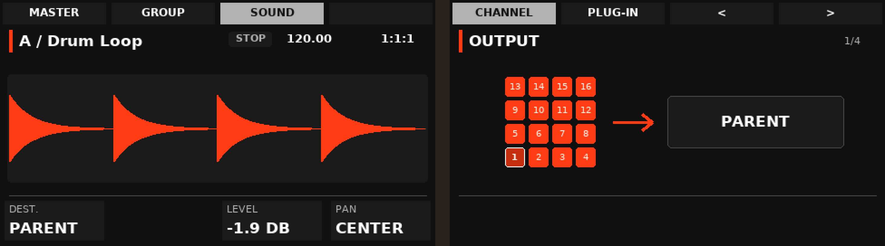
Your first sound - no samples needed
Once the controller and audio output work, try a built-in synth sound. This short path lets you play before learning the editing pages.
- Select an empty pad in normal pad mode. Open BROWSE and choose the Sounds category.
- Open Machinista Synth, choose a bank, then a patch. Use the displayed LOAD action. Loading puts this instrument and patch on the selected pad.
- Press KEYBOARD and play several pads. They now play different notes of this one sound.
- Keep REC off while trying the sound. Change the output volume to a comfortable level. If you hear nothing, check the audio device, selected output and MUTE/SOLO before changing synth settings.
- Follow the Pattern recording chapter to record what you play. Then follow the Projects chapter to save it.
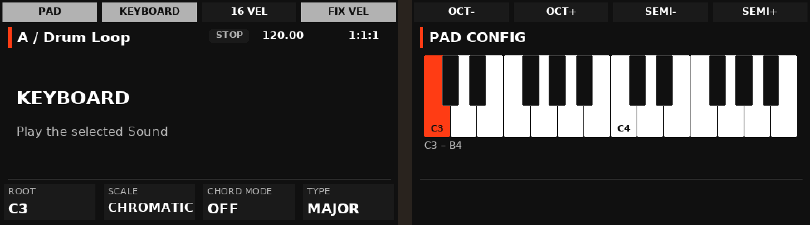
Words you will see on screen
You do not need to memorize these terms. Return to this page when an English label is unfamiliar. The labels stay the same on the device and in the instructions.
- Sound / pad: One slot in a Group. It can play a sample or an instrument.
- Group: A set of 16 Sounds. For example, drums in one Group and keys in another.
- Pattern / event: A repeating phrase / one recorded note or hit in that phrase.
- Scene / Song: A combination of Patterns / the order of those song sections.
- Sample / slice / zone: An audio recording / a cut piece / the keys and strengths that play a sample.
- Bank / patch / preset: A collection of sounds / one saved sound setting. Init is a neutral starting sound.
- Encoder / focus: A turning control / the setting currently selected for editing.
- Velocity / voice: How hard a note is played / one note sounding at a time.
- Routing / cue: The path audio takes / a separate listening output, usually for headphones.
- MIDI / LV2 / WebUI: Note and control messages / an add-on instrument or effect format / the browser control page.
02 · Setup and first start
You need a Raspberry Pi 4 or 5, its power supply, an SD card of at least 8 GB, your controller and a supported audio device for headphones or speakers. The image is a ready-to-use system file: writing it to the SD card installs Machinista and the operating system together.
- On a computer, open Raspberry Pi Imager and choose the supplied .img.xz file with Use custom. Choose the SD card and write it. This erases the selected card. Finish verification, and keep the prepared account/network settings instead of adding your own Imager settings.
- Insert the card, connect the MK3 and an audio output, then power the Pi. Machinista opens the control view on both color displays. Allow about two minutes for first-boot expansion and a possible restart.
- Open settings with SETTINGS. Display button 1 selects AUDIO. Encoder 1 selects the row; 4D PUSH opens it. In INTERFACE, encoder 1 changes the device.
- Choose AUTO to let Machinista select a connected USB audio device, or use a supported audio board attached to the Pi when no USB device is connected. MAIN OUTPUT is the pair of outputs you hear. Leave SAMPLE RATE and BUFFER at their prepared values for your first test.
Trying a new setup. This is a beta. After starting a new Pi or connecting a different audio device, try a sound, record a short Pattern and check the outputs before relying on the setup for a session.
Storage. Keep the boot SD card inserted while powered. Use USB media or the WebUI to transfer samples.
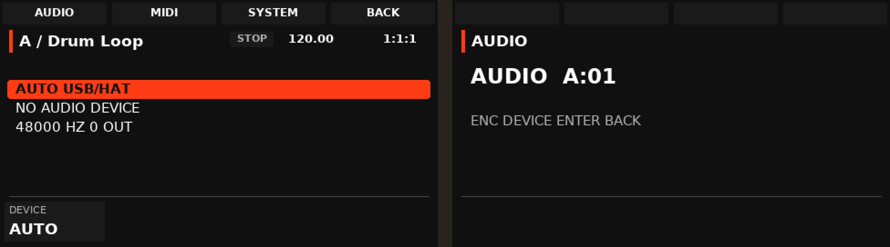
03 · Know your controller
The MK3 has two 480 x 272 color displays, eight display buttons, eight parameter encoders and a 4D push encoder. Dedicated mode buttons and a Smart Strip provide direct performance controls.
Display controls. Display buttons 1-4 belong to the left screen and 5-8 to the right. Encoders 1-4 are below the left screen and 5-8 below the right. A value above an encoder belongs to that encoder; blank fields have no setting assigned.
Pad numbering. Pad 1 is at bottom left. Each row counts left to right: 1-4, then 5-8, 9-12 and 13-16 at the top. Pad function and lighting change with the active mode.
Navigation controls. CHANNEL and PLUG-IN open channel/instrument controls; SETTINGS opens settings. MIXER, ARRANGER and EVENTS open their workspaces directly. VARIATION opens Navigate: choose a highlighted icon, then release to enter. Select the same icon again to return.
Confirm a choice. Turn the 4D encoder to select, press it to confirm. In Events, push up/down to change the focused row or pitch. PITCH, MOD and NOTES select Smart Strip behavior; PERFORM opens Live FX.
Back to top04 · Reading the displays
Read the labels along the top edge first: they tell you what the buttons above the screen do right now. The middle shows the sound, notes or waveform you are working on. Labels beside the controls tell you which setting you can change.
Selection and focus. An inverted field or highlighted list row identifies the selection. In a waveform, the playback range remains clear while the area outside START and END is inverted. Sample/slice markers identify editable boundaries.
Pages and fields. Page counters refer to the current page of settings. The physical page arrows switch banks; they do not automatically locate the transport. The two transport STEP arrows are separate controls.
Temporary information. Status notices, such as a new audio connection or CHOKE ALL NOTES, clear after one second. They do not replace the underlying parameter values.
Instrument and effect overview. The first PLUG-IN page shows the selected chain slot as an instrument/effect card. The slot number and arrows identify its position in the chain. Following parameter pages use both displays. Parameter pages show all eight encoder values on the right, in two columns with compact numeric readouts. The numbers 1-8 identify the physical encoders; the bottom fields keep their usual assignments.
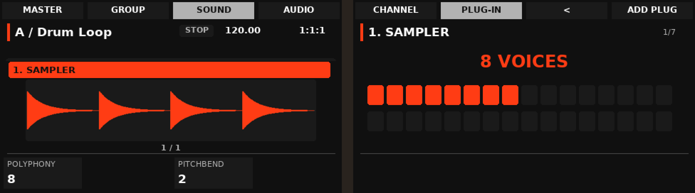
05 · Navigation, hold and pin
Some views stay open only while you hold their button. PIN keeps a view open so you can release the button and work with both hands. Turn PIN off if you want the view to close when you release the button.
- Hold a pad-related mode to work temporarily. Where PIN is shown, use its display button to toggle the pin state. Release the mode key. Use CHANNEL to return to the control view.
- Press CHANNEL for the control view. Use display buttons 1-3 for MASTER/GROUP/SOUND, then 5 for CHANNEL or 6 for PLUG-IN. Use the page arrows and the displayed module arrows to navigate.
- Within Sampling, display buttons 1-4 select RECORD, EDIT, SLICE and ZONE directly. SHIFT + SAMPLING goes directly to Edit.
View navigation. Hold VARIATION and choose IDEAS, SONG, MIXER, BROWSE or EVENTS. The destination is highlighted before release. Select the active destination again to return to the previous workspace; its highlight clears immediately. This also works with PIN enabled. Each display button has a matching workspace icon. BACK cancels the selection. Zoom and scroll remain in the editors; FOLLOW stays in the Pattern/Step views.
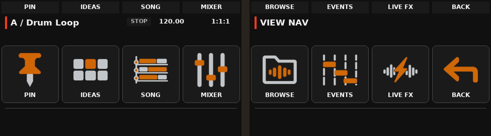
06 · Projects, Groups, Sounds and Patterns
Think of a project as one song session. A Group is a set of 16 pads, a Sound is what one pad plays, and a Pattern is a repeating musical phrase. Scenes combine the Patterns for different song sections; Song puts those sections in order.
| Object | What it contains / controls |
|---|---|
| Sound | One pad slot: sample zones or an LV2 instrument, voice settings, plug-ins, channel and MIDI routing. |
| Group | Sixteen Sound slots, its own Patterns, performance scale settings, mixer and effects. |
| Pattern | Events for one Group. Different Groups can play different Patterns at the same time. |
| Scene | A combination of Group Pattern references. An empty clip contributes no Pattern. |
| Song | An ordered sequence of Scene references. Reusing a Scene reuses its Patterns. |
| Master | The final project mix and master processing, rather than the selected Sound. |
Select the right scope. In a control view, display buttons 1, 2 and 3 select MASTER, GROUP and SOUND. Dedicated A-H keys select Groups in the current bank.
Selection is not erasure. Selecting a pad, changing a Pattern or switching a Group does not delete its content. A missing or muted Scene clip can make a populated Group silent.
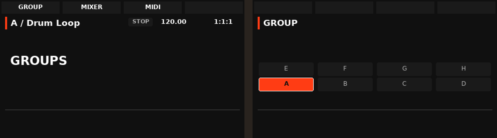
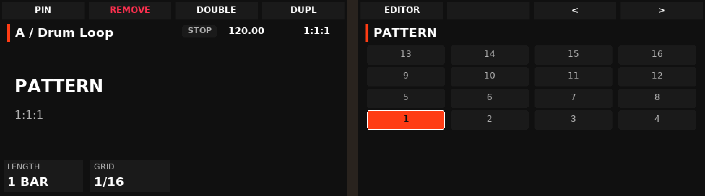
07 · Your first beat
Build a simple drum loop with kick, snare and hi-hat. You need three short WAV or MP3 samples of your own; the public image includes no drum sample pack. Upload them using the WebUI chapter first, or connect a USB drive containing them.
- Choose Group A and Sound 1. Press BROWSE. Open SD CARD, then Library/Kicks (or your own folder). Select a WAV and use LOAD or 4D PUSH.
- Without leaving Browse, choose Sound 2 with its pad and load a snare. Choose Sound 3 and load a hi-hat. Enable PREHEAR when you want to audition the selected file.
- Press TEMPO and turn the 4D encoder. Press TEMPO again to leave the panel.
- Select an empty Pattern and set its length before recording. Enable the metronome if needed. Turn REC on and start PLAY, then play the pads.
- Let the Pattern loop. Turn REC off to hear the recorded notes without adding more. PLAY stops/starts the transport; RESTART returns to the beginning.
- Use SHIFT + FILE to save. Open PROJECT from System settings when you want to name a new project or use SAVE AS.
Check the result. You should hear the recorded kick, snare and hi-hat repeat at the displayed Pattern length. Playing with REC off must not create sequencer notes.
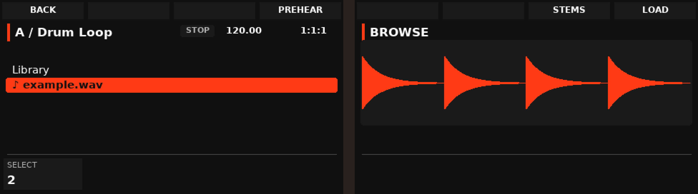
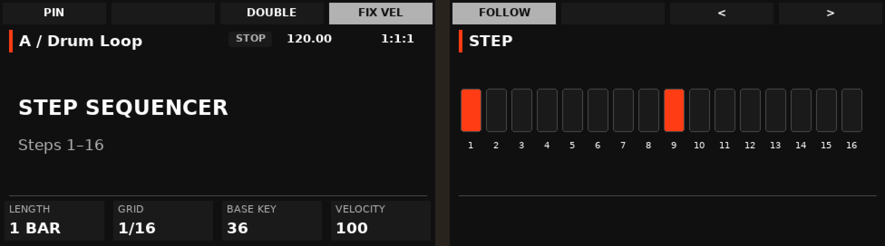
08 · Browse folders and load samples
Use BROWSE to find a sample and put it on a pad. SD CARD means the card inside the Pi; USB means a connected drive. Open a folder, listen to a file and load it onto the selected pad.
- Press BROWSE. Use the displayed selection encoder to move through the list. 4D PUSH or display button 8 LOAD opens the selection. Display button 1 BACK goes up.
- Choose SD CARD or an attached USB source. Open folders until the desired WAV or MP3 appears. A folder prefix distinguishes a folder from a sample.
- Use display button 4 PREHEAR to toggle auditioning. Auditioning does not load the file into the Sound.
- Choose the destination pad while Browse stays open, then load the selected sample. Repeat for other pads without returning to the main Sound view.
USB media and projects. A USB source appears when mounted and disappears when removed. Use COLLECT SAMPLES before moving a project between systems. Do not assume that every externally browsed file is already in a portable project folder.
Supported content. The controller file browser lists WAV files. Use the plug-in browser to load compatible LV2 instruments and effects.
Quick Browse. In BROWSE, SHIFT + display button 2 FIND locates the sample assigned to the current Sound.
WebUI: upload and organize the Sample Library
Open Sample Library. The browser and controller share the SD/USB folder structure. These are library files, not automatically assigned pad Sounds.
- Choose Storage, open the destination folder and use Upload samples or drag in WAV/MP3 files. New folder creates subfolders; Parent folder and the path navigate back. Successful upload rows clear after five seconds; failures remain visible.
- MP3 and floating-point WAV uploads are converted to sampler-compatible PCM. An existing filename is not overwritten. Preview plays on your browser device; controller PREHEAR uses the Pi audio interface.
- Move opens a destination chooser. Choose storage and folder, then Move here. Delete asks before permanently deleting a file or folder. Collect samples before reorganizing library files used in projects.

WebUI: separate four stems
In WebUI Sample Library, use Separate stems next to a WAV or MP3. First choose Download & install engine for the optional local Spleeter model pack (about 80 MB plus runtime). Internet is needed only for setup; audio stays on the Pi.
- Stop PLAY, REC, sample recording and other jobs. Choose audio up to 60 seconds / 64 MiB and press Separate 4 stems. Allow at least 1.5 GiB free RAM and keep playback stopped during processing.
- Open stems folder shows the new Vocals, Drums, Bass and Other WAVs under SD CARD / Library / Stems. Preview and load them as normal samples. Originals and existing pad assignments are preserved.
Beta limits. Separation can leave artifacts and takes time on a Pi. Cancel operation stops the job; Close only hides the window. Insufficient memory stops processing without publishing partial stems.
Controller: separate a sample into stems
Separate a whole WAV or MP3 into Vocals, Drums, Bass and Other without using a computer. The original file and pad assignments stay unchanged. Files are saved under SD CARD / Library / Stems.
- In BROWSE, select a WAV or MP3 and press display button 7 STEMS. In the stem tool, button 5 starts or installs, 6 cancels and 1 returns.
- You can also open Sampling > Edit and choose the processing operation STEM SEPARATION alongside Truncate and Normalize. Use the displayed STEMS or APPLY action. This uses the selected pad sample, including samples collected with a project. It processes the whole source file, not just the visible zoom or selection.
- Stop playback, recording and other processing first. If the optional engine is missing, choose INSTALL and confirm. Installation needs internet; separation afterwards works locally. Then choose START and confirm separation of the whole sample.
- Watch the progress bar; CANCEL stops processing. With DONE, OPEN opens the four completed WAV files in BROWSE. Preview and load them onto pads as usual. This is the same job shown in WebUI, so you cannot start another separation simultaneously.
Limits. Up to 60 seconds / 64 MiB per source; at least 1.5 GiB free RAM and 512 MiB free storage. Model setup requires more free storage. Separation may leave artifacts. Opening the tool never overwrites or assigns a sample.
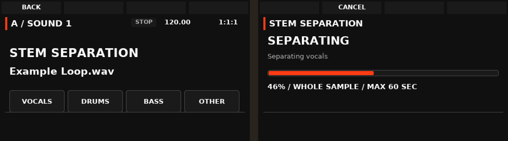
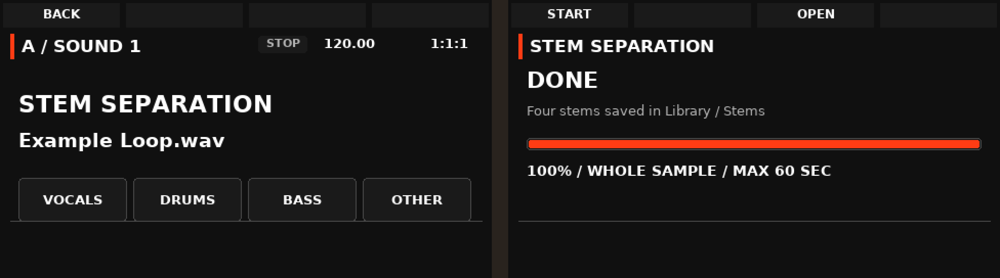
WebUI: build Sample Kits with 4 x 4 pads
Open the dedicated Sample Kits tab. A set contains named banks with 16 pad Sounds each. Sounds remains the place for multisample instruments and synth patches. The editor works independently of the running project.
- Choose + New kit and enter SET NAME. Drag audio files onto a pad; multiple files fill the following pads and create more banks as needed. Pad 1 is at the bottom left.
- Use Choose sample to assign an existing SD/USB library file. Click a loaded pad to preview its first sample through the browser device. Stop preview ends playback; this does not record a note or play through the Pi.
- Drag pads to swap them. Edit the selected sample name below the grid. Use + Bank, Rename and Remove bank to organize the kit.
- Save kit collects the samples and stores the pad assignments. Save copy creates a separate set. Select SD or USB and choose a kit to edit. New folder organizes kits, and Download ZIP makes a portable backup. Delete kit and Delete folder ask before permanently deleting content.

Sample Kits: import folders and expansions
Drop a sample folder, ZIP or MPC XPN onto the import area. The folder/archive name becomes the set name; MPC Expansion.xml can supply its expansion name. Read Import details after conversion.
- Use Import folder for already installed sample or expansion content. The importer reads subfolders, converts readable audio into PCM WAV, and creates banks of 16 pads. The whole expansion stays together in the set list.
- MPC Drum XPM programs retain sample pad positions, banks and velocity layers. Keygroup samples can be imported, but keygroup instrument mapping is not reproduced. Synth programs, effects, patterns, tuning and round-robin behaviour are not reproduced.
- Drop an installed expansion folder to save its MXGRP kits in a folder named after the expansion. Drop a single MXGRP to open an editable kit. If Machinista needs the WAVs, choose Locate expansion samples. Sample pads keep their order and close up around skipped synth sounds.
- Matching kit previews and artwork are imported when available. Use the play button in the WebUI or PREH on the controller. If the browser skips hidden preview files, drop a ZIP named after the expansion containing its preview files, or use Attach preview for one kit.
- Stop PLAY/REC and open BROWSE > SAMPLE KITS. Choose SD or USB, highlight the kit and press LOAD. Choose a bank if the kit contains several. This replaces the selected Group Sounds and Group processing, keeping its existing Patterns. Save your Group first if you want to keep its Sounds.
- To load one WAV, open BROWSE > SD CARD or USB > EXPANSION SAMPLES. Choose the expansion and kit, then select a WAV. Use PREH to listen and LOAD to assign it to the selected pad.
Transfer limits. WAV, AIFF, FLAC, MP3 and OGG; up to 1 GiB and 128 banks per set. Uploading does not change the running project. Collect project samples before deleting sets used by those projects.
Back to top09 · Play, locate and set tempo
PLAY starts and stops the music. RESTART returns to the beginning. TEMPO sets the speed in beats per minute (BPM). You can keep these controls at hand while editing a sound or a sample.
| Control | Action |
|---|---|
| PLAY | Toggle transport playback. REC is a separate recording state. |
| RESTART | Return to the beginning, including while playback continues. |
| Transport STEP left / right | Locate by Arrange Grid. Hold for repeated movement every 0.25 seconds. |
| SHIFT + transport STEP | Locate with the finer Step Grid. |
| SHIFT + TAP | Toggle the metronome. |
| SHIFT + REC | Start recording with a count-in. |
| SHIFT + MUTE | Choke all voices, previews and held generators from any workspace. |
Tempo. TEMPO selects its persistent panel. Turn the 4D encoder; SHIFT gives fine changes. Tap with TAP. VOLUME and SWING have their own panels.
Separate arrows. The arrows beneath SAMPLING switch pages. The lower transport arrows locate playback. Do not confuse them with the master-section arrows.
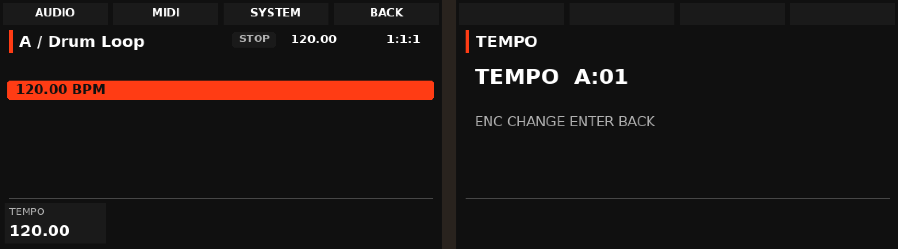
10 · Record and overdub a Pattern
Record your pad playing into a repeating Pattern. REC stores which notes you play and when you play them. It does not record incoming audio; use SAMPLING for that. Turn REC off when you only want to practise or listen.
- Select the Group and Pattern. In PATTERN, turn encoder 1 to set LENGTH; SHIFT gives single-step changes. Check that the Scene has an active clip for this Group.
- Hold SHIFT + FOLLOW to open GRID. Encoder 1 sets resolution; encoder 5 REC QUANT switches recording quantization independently of the editing grid. Hold REC for one second for recording length/grid preparation; release to return to recording.
- Enable REC, start PLAY and perform. The displayed Pattern length defines the loop. On later passes, overdub adds events unless a different recording mode is selected.
- Turn REC off to audition. If a part is wrong, erase or undo it rather than clearing the Sound slot. Save after you are satisfied.
Quantize and timing. Quantize changes note positions against the selected grid. Quantize 50% moves notes partway toward the grid. Swing and nudge are separate timing tools; they can intentionally move playback away from the straight grid.
No unexpected note capture. If notes seem to appear while auditioning, check REC first. A lit recording state can remain enabled when you change views. Check the Events editor rather than assuming the pad sample itself has changed.
Pattern length. Long Patterns have additional step banks and editor pages. FOLLOW moves the visible window with playback; turning it off only changes the view, not the loop length.
Grid tabs. Hold SHIFT + FOLLOW. Display buttons 2 SWING, 3 GRID and 4 QUANT select the highlighted section. Only the selected timing section shows its parameters. GRID sets resolution, enable and nudge; encoder 5 REC QUANT controls recording quantization. SWING adjusts playback timing; QUANT sets strength and Sound/Group target. Button 8 APPLY quantizes existing notes only in QUANT. Button 1 controls PIN while GRID is held; afterward BACK returns to the previous view.
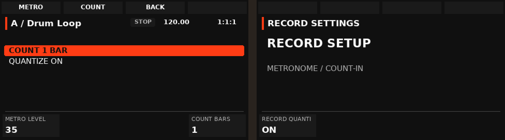
11 · Program the Step sequencer
Build a beat one step at a time instead of playing it live. Choose a Sound, then use the 16 pads as positions in the loop. A lit step contains a note. Press it again to remove that note.
- Press STEP. Select the Sound or keyboard note you want to program first.
- Press pads to set or clear steps in the visible bank. For a sliced or pitched Sound, the last played keyboard note is used when available, rather than always using the first slice.
- Change the step bank with the navigation controls. Enable FOLLOW to bring the active playback bank into view automatically.
- Use FIX VEL when you want consistent inserted velocities. DOUBLE expands the Pattern with duplicated content.
View versus content. FOLLOW does not add notes and does not change the Pattern length. If the playhead is absent, check whether this Pattern is the active clip and whether playback is running.
Fine event edits. Use the Events/grid editor to change an individual note, probability or length. Step pads are best for fast on/off programming rather than detailed multi-note editing.
12 · Select and edit individual events
Use EVENTS to fix or change recorded notes. Each block is a note: its horizontal position tells you when it starts, and its width shows how long it lasts. Select notes before moving them or changing their pitch, strength or length.
- Hold EVENTS to open the editor temporarily. Display button 1 PIN keeps it open after release; press EVENTS again to leave it. SHIFT + SELECT also opens the editor directly. Sound rows run from pad 1 at the bottom to pad 16 at the top.
- Use the labelled time/row controls and the SELECT actions. ALL and NONE set or clear the event selection; UP/DOWN move the visible row focus.
- EDIT opens the marked notes; ADD NOTE inserts at an empty cursor position. SELECTED highlights the cursor selection. Use the encoders under POSITION, PITCH, VELOCITY, PROBABILITY and LENGTH. DONE returns to the grid.
- Return to the grid with the done/back action. Use ERASE and confirm when deleting selected events. Cursor navigation pauses Follow so you can work without the view moving away.
Selection scope. A selected notes takes priority over the note under the cursor. In pitch view, the Sound stays selected while the note changes. Use the labelled selection controls before changing event parameters.
Follow and stop position. Moving the cursor pauses Follow. Press FOLLOW or display button 3 FOLLOW to enable it again. The stopped playhead shows the playback position. RESTART returns to the beginning.
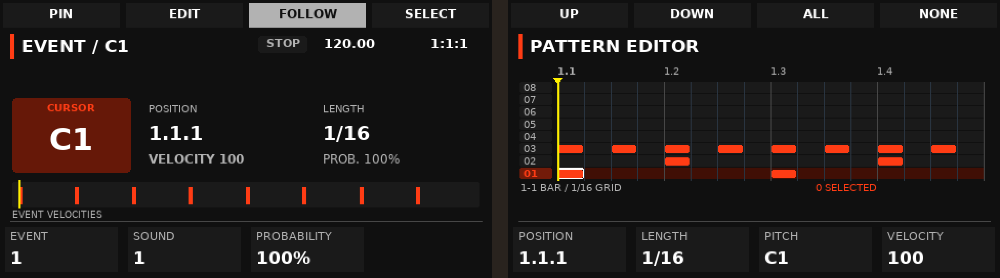
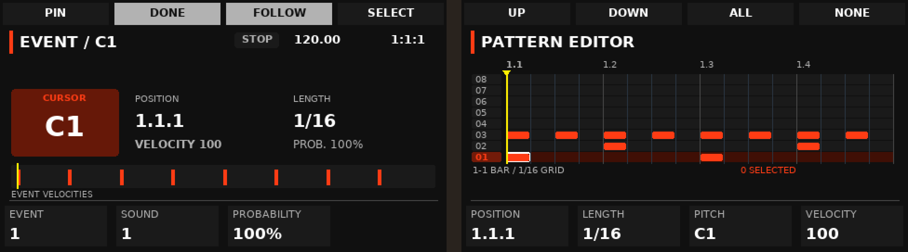
Events: select a time range
A time selection contains notes from the selected Sound/pad only. In Keyboard mode it includes all pitches of that Sound inside the range. Other pads are excluded.
- Choose the Sound/pad first. Hold physical SELECT or display button 4 SELECT. Turn the 4D encoder, encoder 1 EVENT or encoder 5 POSITION to grow the range.
- Turn back to shrink the range. Release SELECT to retain the selected notes. Marked notes have an outline; merely selecting does not change note data.
- EDIT changes the selected notes together. To delete it, press ERASE and confirm. NONE clears the selection; tapping the SELECT display action toggles only the cursor notes.
- With notes selected, SHIFT + pad 11 copies only the selected notes of this Sound. Move the time cursor to the destination and press SHIFT + pad 12. The earliest copied note lands at the cursor; relative timing, pitches, velocity and length stay intact. Pasted notes are selected. Without an explicit note selection, the shortcut copies the entire current pad and retains its original Pattern times when pasted.
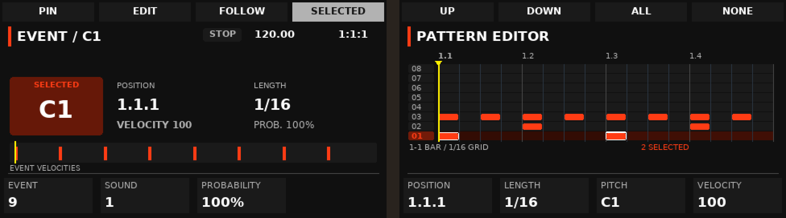
13 · PAD MODE: Keyboard, scales and chords
Normal pad mode plays a different Sound on each pad. KEYBOARD plays different notes of the one selected Sound, like piano keys. SCALE helps you stay in a chosen scale. With a sliced sample, the notes can play different slices instead.
- Press KEYBOARD or use SHIFT + PAD MODE to toggle melodic playing of the selected Sound. CHORDS toggles custom chords. Choose ROOT and SCALE as required.
- In PAD MODE > KEYBOARD, encoders 1-4 set ROOT, SCALE, CHORD MODE and TYPE/PRESET. For CUSTOM, page arrows reveal the variation and voice-edit pages.
- CHORD MODE: OFF plays single notes; HARM builds intervals from TYPE and SCALE; SET selects prepared voicings; CUSTOM uses your imported or edited chord map. Choose TYPE/PRESET after selecting the mode.
- Play with REC off to audition. With PLAY and REC on, the generated notes are recorded into the selected Pattern. FIX VEL sets constant velocity; 16 VEL spreads velocities of the selected Sound across pads. Return to PAD for separate drum Sounds.
Lighting and slices. Assigned custom-chord pads glow dimly; held and last-played pads are highlighted. A committed slice Sound uses its slice mappings and disables chord generation. Use a tonal Sound for chord playing.
Choke and link. Pad configuration also contains choke and link groups/modes. Use a shared choke group for mutually exclusive hits, such as open and closed hats. Link groups can trigger related Sounds together.
Transpose shortcut. SHIFT + pads 13/14 and 15/16 transpose sequencer events by semitone and octave. They are not a universal keyboard-octave shortcut.
Pitch display. The display uses note names, with C3 corresponding to MIDI 60. On a fresh Sound the keyboard starts at C3. The keyboard drawing follows the last played note or chord and keeps that focus after release.
Keyboard: CUSTOM, variations and LEARN
Load a chord preset first. Settings belong to the current Group; the selected Sound supplies its instrument. The examples show the CUSTOM performance and voice-edit pages.
- Choose CUSTOM, then PRESET. PAD BANK selects the next block of 16 chords. A MIDI keyboard uses the preset input-note mappings; controller pads follow their stored order. ROOT transposes the map relative to its saved anchor.
- STRUM MS staggers voices; DIRECTION changes their order. TIME RAND adds timing variation. VEL SPREAD, VEL DIR and VEL RAND shape relative velocities. Begin with zero variation, then add only what you want to hear.
- Play an assigned pad, then use page 3/3: encoders 1-3 edit the voice number, its note and input key. Display buttons 5/6/7 are LEARN/INV-/INV+. INV- lowers the highest chord note by an octave; INV+ raises the lowest by an octave, keeping the voice count.
- LEARN waits for an incoming MIDI chord. Release all keys to commit the notes; press LEARN again to cancel. It learns pitches, not original timing or velocities. Save the project to preserve the edited map and performance settings.
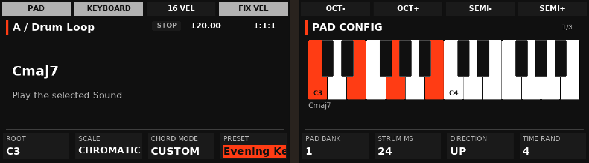
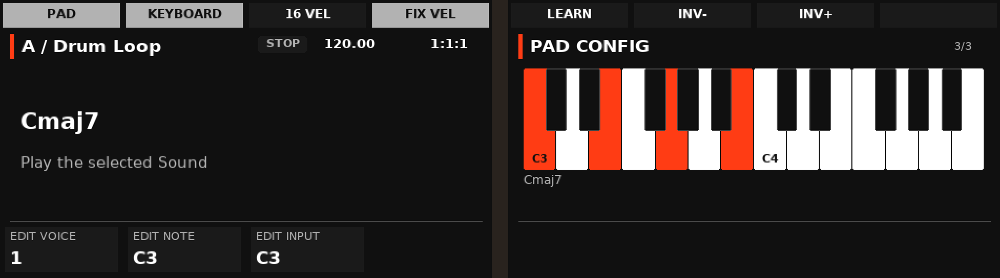
WebUI: import and edit Custom Chords
Open the Chords tab. An imported map supplies notes only; select a playable Sound on the controller before using it. The pictured chord names are examples.
- Import chords accepts MPC .progression, Ripchord .rpc and Machinista chord JSON. Alternatively choose New preset. Unsupported or invalid files show an error instead of a usable preset.
- Choose Edit. Enter Preset name and Transpose anchor, then assign Input key, Chord name and Notes per row. The note fields use MIDI numbers: 60 is controller C3. Separate note numbers with spaces or commas. Add chord adds a row; remove deletes that row.
- Save preset, then select it on the controller under PAD MODE > KEYBOARD > CUSTOM > PRESET. Imported content is copied into the project. Reselect the library preset after WebUI edits to import the revised copy.
- Download saves the preset as JSON. Delete removes the library entry; saved projects keep their own chord copy. Library editing does not immediately overwrite a running project.

14 · Note Repeat and arpeggiation
Hold a pad with NOTE REPEAT to play repeated hits, such as a fast hi-hat roll. An arpeggiator turns held notes or a chord into a repeating note pattern. With PLAY running, the repeats follow the beat.
- Hold NOTE REPEAT and play pads. Select the rate before or during the performance. Use LOCK if you want repeat to remain available after releasing the mode key.
- Display buttons 5-8 select 1/8, 1/16, 1/32 or 1/64. The DIVISION action cycles NORMAL, TRIPLET and DOTTED. LOCK and HOLD have their own labelled actions.
- For melodic repetition, use Keyboard mode and the arpeggiator parameters. Choose direction, octave range, gate, dynamic and sequence as required.
- Turn REC on when you want the generated performance written into the Pattern. SHIFT + MUTE releases all held/repeating notes.
Grid alignment. During playback, a pad hit between subdivisions waits for the next repeat boundary. It does not restart the repeat clock. When transport is stopped, repeat uses its own running interval.
Hold versus lock. LOCK keeps the repeat mode active. HOLD retains the played arpeggiator notes. These controls solve different problems; disable HOLD if notes continue after your fingers are lifted.
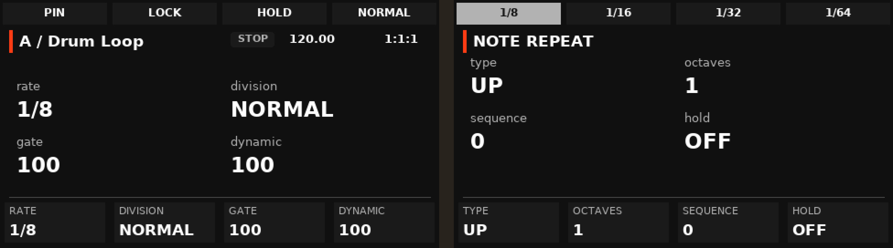
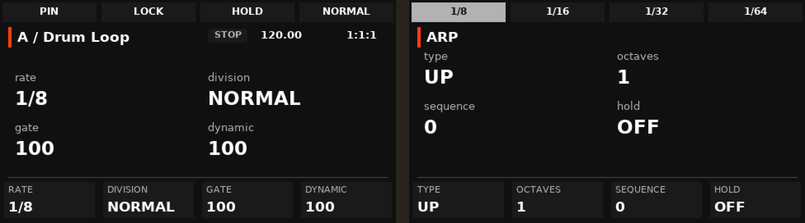
15 · Sampling: choose an input and record
Record audio and put the result on a pad. First choose what to record and which pad should receive it. Watch the level meters while playing the source. The threshold mark shows the level at which automatic recording starts.
- Press SAMPLING and choose RECORD. Select EXT MONO, EXT STEREO or INTERNAL. Choose an available input channel/pair, or the internal source you want to resample.
- Play the source and inspect the meters. Adjust the source gain and, on supported HAT hardware, Input Gain. Leave headroom; a clipped recording cannot be repaired by normalizing it.
- Choose DETECT for threshold recording, SYNC for a timed sampler take, or LOOP for a timed take that becomes an AUDIO Sound. Set threshold or BARS before arming.
- Use the displayed START/REC action. In DETECT, recording waits for the signal to cross the threshold; the manual trigger action can start it while armed. STOP finishes the take and CANCEL abandons it.
- Play the target pad to check the recording. Recorded files use simple numbered Sample names. Use the available history actions to return to an earlier take.
Input rate. Use a sample rate supported by the connected interface. A rate mismatch can sound like a bitcrusher. Recheck AUDIO > SAMPLE RATE when changing devices.
Audio capture versus notes. The Record page captures audio. The transport REC button controls sequencer event recording. Monitor the correct state before recording a new take.
Sampling: AUDIO Sounds and loop recording
An AUDIO Sound plays a recording in time with its Group Pattern without needing MIDI trigger notes. Its source is still a sample file; insert effects and normal channel routing remain available.
- Choose an empty target pad in RECORD. For an internal recording select INTERNAL, then GROUP, MASTER or SOUND with its Group/pad number. For an external recording select the connected input.
- Set MODE LOOP and BARS, for example 1. START arms the take; PLAY starts the transport. Recording begins at the next bar and finishes after the selected length. The take becomes an AUDIO Sound.
- In RECORD hold SHIFT and press display button 6 AUDIO. Encoders 1-4 edit MODE, BARS, STRETCH and TUNE.
- MODE AUDIO loops an existing sample. BARS is its musical length; STRETCH preserves pitch as tempo changes, OFF changes playback rate. TUNE transposes. MODE SAMPLER restores note-triggered playback.
Transport and Pattern. The Group needs an active clip. STOP silences playback; RESTART and locating change audio phase. A short Pattern restarts the recording early, a long one repeats it. Tapping the pad during playback does not add a duplicate one-shot. MIDI-gated Audio playback is not provided.
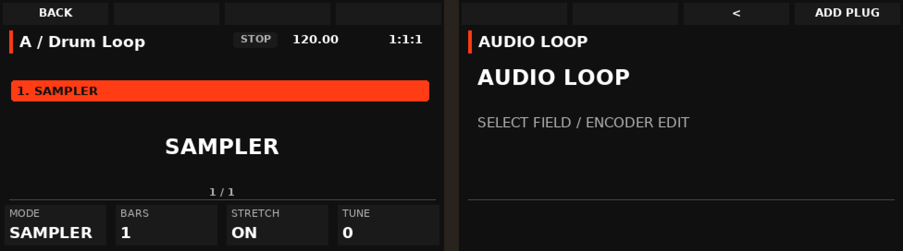
Sampling: BOUNCE TO PAD
Bounce records a Sound and its playing Pattern into an empty destination pad. The source instrument, its state and MIDI events remain available. External synthesizers are captured in real time.
- In RECORD hold SHIFT and press display button 5 BOUNCE. Encoders 1-8 correspond to the eight displayed fields.
- Set SOURCE G and SOURCE PAD. INPUT SOUND captures that Sound including its insert effects and routed external audio. Alternatively choose a direct EXT input. Keep the source Group clip active.
- Choose TARGET G, TARGET PAD, BARS and RESULT AUDIO or SAMPLER. The target must be empty and different from the source. MIDI REC must be off.
- START arms the bounce and starts PLAY if stopped. It records at the next bar. CANCEL discards it; STOP finishes early. After loading, an AUDIO result follows the target Group Pattern automatically.
Keep the source or mute it. MUTE SRC defaults OFF. Enable it to mute the original after a successful bounce, otherwise both can play. MIDI and plugin state are kept. A changed target/project is never overwritten; its recording stays in Samples. Loading the file can delay the first audible loop pass.
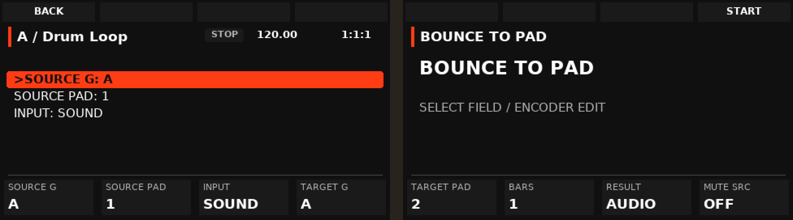
16 · Trim, select and process a sample
Remove unwanted silence or keep only the part you want to play. START and END set the playback boundaries. A separate selection tells commands such as Normalize which section to process. Check that selection before applying a change.
- Use SHIFT + SAMPLING for direct access to Edit. Select the correct Sound and sample before changing a boundary.
- Use encoders 1 and 2 for START and END. The page arrows switch playback-range and selection banks. Encoders 3 and 4 remain ZOOM and SCROLL.
- Choose a processing action with the labelled previous/next actions. NORMALIZE raises the sample level; other operations act on the selected audio according to their settings. Confirm APPLY only after checking the range.
- For STRETCH, set its tempo/length options and audition before APPLY. CANCEL returns without committing the preview.
Normalize and slices. Normalize the source sample when you want all slices to inherit the change. A slice is a range of that source, not a separate normalization target. Zone gain is a different playback parameter.
Original audio. Processing creates derived audio rather than silently overwriting the source file. SAVE AS and COLLECT SAMPLES are still recommended before restructuring an important project.
Deleting. Clearing a Sound slot removes the Sound assignment. It is different from deleting a recording/file. Use the explicit sample-delete view and confirmation for file deletion.
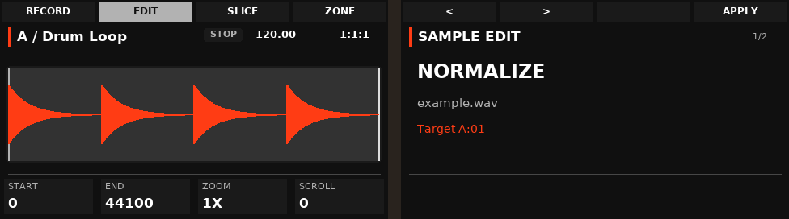
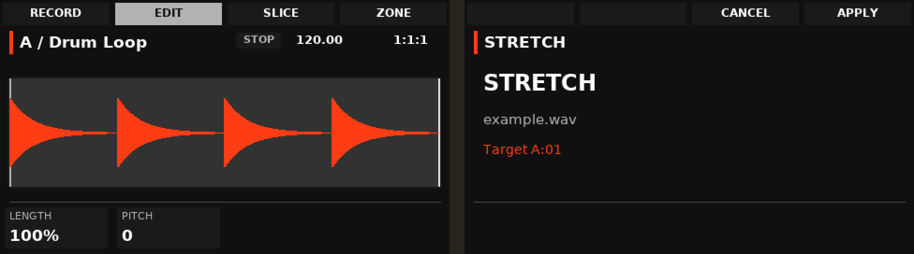
17 · Zoom and scroll the waveform
Zoom in to place a cut precisely, then scroll to the part you want to edit. The waveform is a picture of your audio. Zoom and scroll only change what you see; they do not change the sound, playback speed or sample length.
- In Edit, Slice or Zone, turn encoder 3 for ZOOM and encoder 4 for SCROLL. These controls are on the same page as the waveform.
- Zoom toward the cut you want to inspect, then scroll as needed. Changing zoom anchors to the relevant range boundary when it is visible.
- Return to the boundary control to move START or END. Fine changes become easier to judge after zooming in.
- In Slice Edit, replay the slice to refocus its boundary without losing the zoom level you selected.
Slice focus. At overview zoom the selected slice is centred with neighbouring audio. At close zoom the selected START or END cut is centred instead. Use left/right page navigation in Slice Edit to choose START or END; replay retains that choice.
Viewport persistence. Replaying a slice preserves zoom. Selecting a different sample asset can reset its viewport. Zoom is a view operation and does not modify slice positions.
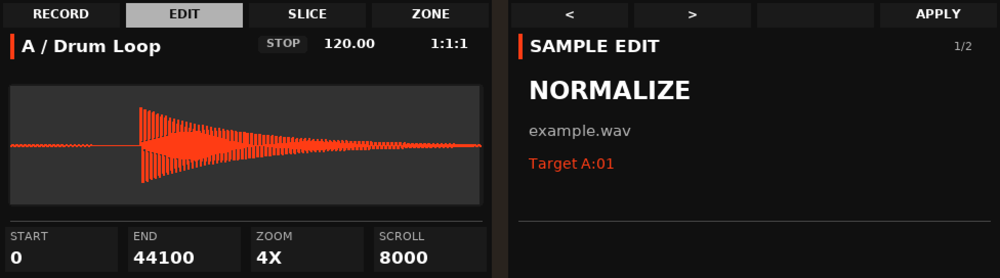
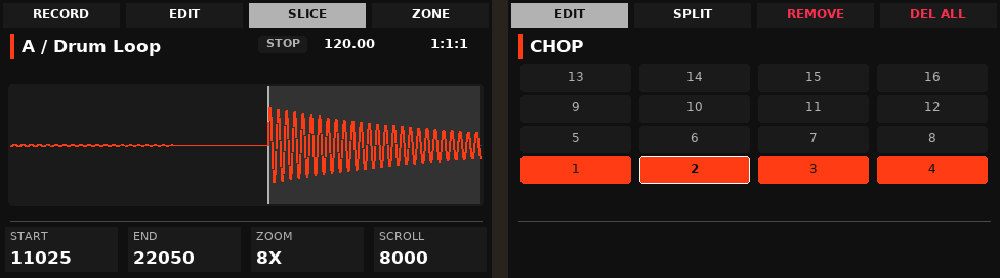
18 · Slice automatically or on a grid
Turn one loop into playable pieces called slices. GRID places evenly spaced cuts; DETECT looks for attacks such as drum hits. Listen to the slices and adjust the cuts before putting them on pads.
| Mode | Use it for / principal setting |
|---|---|
| SPLIT | An equal number of sections. Choose the division/count. |
| GRID | Musical divisions based on the source tempo and selected grid. |
| DETECT | Transient-driven cuts. Adjust sensitivity and inspect the resulting boundaries. |
| MANUAL | Place cuts during playback with the pads; see the next chapter. |
- Open SAMPLING > SLICE. Choose the required MODE and set its parameters. The waveform and slice count update for that choice.
- Set BPM to AUTO when the inferred tempo is useful, or MANUAL when you know the source tempo. Use ADJUST half/double for a tempo that is interpreted at the wrong musical multiple.
- Audition the slices with the pads. Enter EDIT to refine a cut before applying it. Use APPL.TO when you want to choose another Group or a specific Sound target.
A reversible plan. Cuts are range metadata while you work. APPLY turns the plan into playable assignments. After mapping slices inside a Sound, manual slice edits update the playable zones immediately. Changing an automatic split configuration can regenerate the cut plan, so save important work before trying a different slicing strategy.
Tempo is source information. The slice BPM describes the source loop and generated Pattern interpretation. It does not mean the source recording was made at the project tempo.
19 · Manual live chopping and Slice Edit
Use MANUAL to place your own cuts while listening. Then open Slice Edit to move the start or end of a slice. You can tighten one cut without starting again with the whole loop.
- Choose MANUAL with EDIT off. Press pad 1 to start the source sample. Strike the next unused pad when you hear the next desired cut. Continue with successive pads.
- Press an existing slice pad to replay from that start point. After the sample has finished, an existing slice pad can restart playback; you do not need to recreate the slices.
- Enter EDIT and play the slice you want to adjust. START is the initial boundary focus. Choose START or END with left/right navigation, then adjust the corresponding boundary.
- Zoom and scroll to inspect the cut. Replaying a pad preserves zoom and the START/END focus. Use SPLIT/ADD for another boundary or REMOVE for the selected cut; DEL ALL clears the complete cut plan.
Protect the current work. Auditioning an existing pad does not add a new slice. The next unused pad creates a cut only during live chopping. Keep EDIT enabled while refining existing cuts, and avoid regenerating an automatic mode accidentally.
Context around the cut. The selected waveform appears centrally with neighbouring slices at overview zoom. Once the sample no longer fits, the chosen cut is brought into view so you can hear and see the same boundary.
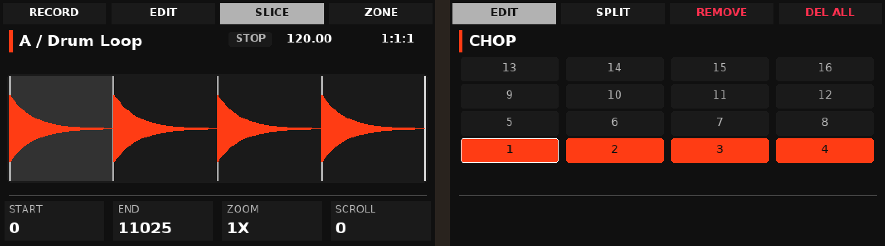
20 · Apply slices to a Sound or Group
After checking your cuts, choose where the slices should go with APPL.TO. Keep them inside one Sound for Keyboard playing, or spread them across a Group of pads. APPLY carries out that choice. Check the destination before pressing it.
- Audition and select the desired slice, then open APPL.TO. Choose the target Group and first Sound/all-Sounds target shown by the interface.
- Use the GROUP and SOUND encoders on the target page, or a dedicated Group key. BANK-/BANK+ expose further banks. Confirm the displayed Group and Sound.
- For one slice, choose the single-slice option (SINGLE / EDIT action on the Apply To page), choose its Sound slot, then APPLY. This is an assignment workflow, not a requirement to export a WAV first.
- For a full slice set, choose the desired target and Pattern-creation option, then APPLY. For keyboard mapping, return to Keyboard mode and play only the mapped slice notes.
MONO means voice behaviour. MONO on Group apply sets Polyphony = 1 and Choke Group = 1 for the assigned Sounds. It does not convert a stereo WAV to a mono file.
Destination content. Applying to occupied Sounds can replace their assignments. Use another Group or save a project copy when you need to keep the existing kit.
Further edits. ZONE exposes the applied key/velocity mapping and per-zone playback parameters. Return to SLICE > EDIT to work on the slice plan rather than accidentally editing a different Sound.
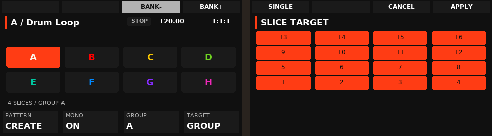
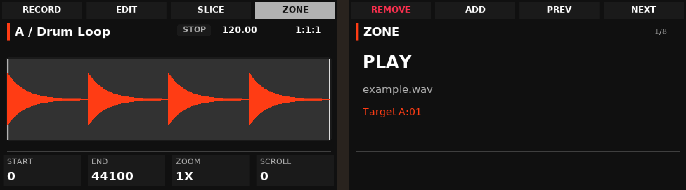
21 · Zones and layered sample mapping
Make one playable instrument from several recordings. For example, use low, middle and high piano samples on different keys. Each sample has a zone: the notes and playing strengths that trigger it. ROOT is the note the original sample was recorded at.
| Zone page | Parameters |
|---|---|
| PLAY | START and END of the zone. |
| LOOP | Loop on/off, loop start/end and crossfade. |
| TUNE | Tune, gain, pan and root note. |
| ENVELOPE | Zone attack and decay. |
| MAP | Lowest/highest key and lowest/highest velocity. |
- Open SAMPLING > ZONE and select the zone you want to inspect. PREV/NEXT moves between zones; ADD creates an additional mapping and REMOVE removes the selected mapping.
- Use page arrows for parameter banks. Encoders 1/2 edit the shown zone fields; 3/4 remain ZOOM/SCROLL.
- Play notes across the key and velocity ranges and check that the intended sample triggers. Check root note when an applied slice or multisample sounds pitched incorrectly.
Gain versus normalization. Zone gain is a playback multiplier. It does not rewrite or normalize the source file. Source normalization should be performed in Sample Edit before evaluating a complete sliced Sound.
Overlapping mappings. Overlapping key and velocity ranges can layer audio. If a Sound seems unexpectedly loud, inspect overlapping zones rather than compensating only at the Master.
WebUI: delete Sounds
Every entry in Sounds has Delete, including generated synth and LV2 bank patches.
- Choose Delete and confirm the Sound name. Cancel leaves it unchanged. Deleted bank entries do not return after a catalog refresh or restart; the original patch bank remains installed.
- Existing projects keep their loaded Sound, samples and plug-in settings. A recovery copy of the library entry is retained.
WebUI: build a multisample Sound
Open Sounds > New sampler Sound, or Edit current pad zones to start from the selected Sound. Upload your samples in Sample Library first.
- Set Sound name, Folder and comma-separated Tags. Add samples opens the SD/USB picker: navigate, select the recordings and Add selected. Each recording becomes a Zone.
- Roots from filenames detects note tokens such as C3 or A#2. Select the filename octave notation first: controller C3 = MIDI 60, scientific C4 = MIDI 60. Review Root for every sample; it is the original pitch, not its lowest playable note.
- Map between root notes divides the keyboard between recordings. Extend to full keyboard covers the ends. Edit Key low/high and Vel low/high; overlapping ranges can sound together. Drag map edges or use the note selectors.
- Select a Zone to edit tune, gain, pan, playback range and loop. Save Sound collects its sample files. To hear the saved revision on the controller, use Load on selected pad or load it from the Sounds category in BROWSE.


22 · The Sampler: voice, envelopes and filters
Shape how a loaded sample plays. Voices set how many notes can sound together. An envelope shapes the start and fade of each note. A filter makes the sound brighter or darker. Play a few notes while changing one setting at a time.
| Page | Purpose |
|---|---|
| VOICE | Polyphony, legato glide and pitch-bend range. |
| PITCH/ENV | Tune, reverse and ONESHOT/AHD/ADSR volume envelope. |
| FX/FILTER | Compression, drive, sample-rate/bit reduction and OFF/LP2/BP2/HP2/EQ filter. |
| MOD ENV | Attack/decay modulation of pitch, cutoff and pan. |
| LFO | Shape, free/synced speed, phase and pitch/filter/pan depth. |
| VEL/MOD | Velocity and modulation-wheel influence, including start and cutoff. |
- Select SOUND with display button 3, PLUG-IN with button 6 and the Sampler slot. Use page arrows for parameter banks and encoders under the displayed fields.
- For a shaped sustained Sound choose ADSR. For a drum hit use ONESHOT or AHD. Parameters not used by the chosen envelope type are hidden.
- Choose LP2, BP2, HP2 or EQ, then adjust cutoff and resonance or EQ gain/width. Cutoff uses equal travel per octave; hold SHIFT for four-times-finer changes. Play the pad to compare the result.
Two different kinds of effect. The Sampler filter is built in at Sound level. An LV2 filter is a separate chain plug-in and may also process a Group or Master. Deliberate SR/BITS reduction produces a bitcrusher effect; it is not a recording-rate setting.
Shape a sound by ear
You can start with these controls instead of learning every page. The same ideas apply to many synths and samplers. Change one control while playing, then listen before changing another.
- ATTACK: turn it up for a softer, slower start; turn it down for an immediate hit.
- DECAY and SUSTAIN: Decay sets how quickly the first peak settles; Sustain sets the level while a note is held.
- RELEASE: sets how long a note fades after release. Long releases and big chords use more voices. The selected playback mode also affects sample endings.
- CUTOFF: with a low-pass filter, lower values make the sound darker and higher values make it brighter. Other filter types affect a different part of the sound.
- RESONANCE: emphasizes the sound around the filter cutoff. Start with a small amount; high settings can become loud or sharp.
- VOICES and MONO: voices are notes sounding together. A low voice limit can cut earlier notes off. Mono playing is useful for a single-note bass or lead.
- LEVEL and effects: compare sounds at similar loudness. Lower the level if the output distorts before adding more processing.
23 · LV2 plug-ins: add, replace and remove
Plug-ins add instruments or effects. LV2 is the plug-in format Machinista uses. An instrument makes a sound; an effect changes audio passing through it. Effects in a chain work in order, like pedals connected one after another.
- Choose the intended MASTER, GROUP or SOUND scope. Open PLUG-IN navigation and select an existing slot or ADD PLUGIN.
- Use SHIFT + BROWSE to open the plug-in browser even when a slot is already occupied. Select an effect/instrument from the compatible catalog and load it into the chosen position.
- Turn the shown controls and play the pads to audition. Page through additional parameters. BYPASS lets you compare processed and unprocessed audio.
- Hold SHIFT in the plug-in view for chain actions. Display button 6 opens BROWSE and 7 is REMOVE; confirm the removal. COPY/PASTE/MOVE are shown on the left.
Chain management. COPY/PASTE duplicate the selected plug-in state; MOVE reorders it. An instrument must remain first. Removing/reordering also updates associated parameter references, so save a copy before restructuring a complex automated chain.
Real-time budget. Plug-ins differ widely in processing cost and reported latency. Test each chain at the desired buffer. A tape or look-ahead effect can add audible delay even when pads and displays respond immediately.
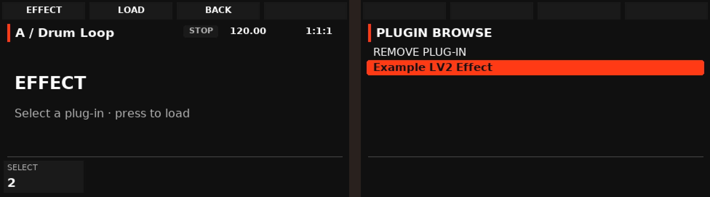
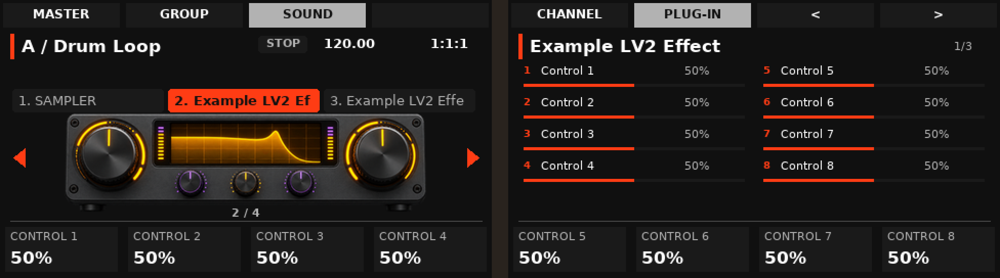
WebUI: install and remove LV2 plugins
The clean image contains no LV2 bundles. Open LV2 Plugins to install compiled Linux ARM64 effects or instruments; source code, Windows and macOS binaries cannot be loaded.
- Upload & check accepts ZIP, TAR.GZ, TGZ or TAR containing complete .lv2 folders, up to 128 MiB. Keep manifest.ttl, metadata, binaries and required resources together.
- Read the architecture/dependency/metadata result. NOT OK is not an installed plugin. Compatible bundles activate only when playback and recording are stopped; refresh the installed list and then open the controller plugin browser.
- Use Find installed plugins to filter names/URIs. Remove deletes the complete bundle, including every plugin in it. A bundle used by the current project is protected; remove its active instances first.
- Removal is different from clearing a slot on the controller. Older saved Sounds/projects keep references and need the same plugin reinstalled. Keep installers and required licences with your backup. Built-in Live FX needs no LV2 installation.

WebUI: manage patch banks
Open Patch banks in the top navigation, or Manage patch banks from Sounds. Select the instrument/effect in this WebUI; it does not change the selected controller Sound.
- Import preset bank accepts Dexed SYX/JSON, OB-Xd FXB/FXP/JSON and RaffoSynth DAT/JSON. Unzip downloaded packs first. The list shows only the selected instrument and the number of patches in each bank.
- Remove bank removes its generated entries from Sounds too. Current projects and separately saved editable Sounds retain their own parameters. Built-in Machinista Synth category banks and Init are protected.
- Sounds is grouped into Multisample Sounds, LV2 patches and Machinista Synth. Expand a type, instrument and bank to see its patches, or use Type and Search Sounds.

24 · Channel routing and the Mixer
Balance your sounds in the Mixer: LEVEL changes volume and PAN moves a sound between left and right. Routing means choosing where audio comes from and where it goes, such as sending a Group to a separate output on your audio device.
- Choose SOUND, GROUP or MASTER. Open CHANNEL and select OUTPUT. Use AUDIO for the main destination, AUX1/AUX2 for sends and, at Sound scope, MIDI for external-note output.
- To use separate interface outputs, select the output port/pair offered by the interface. Route the selected Sound or Group and verify the destination on the interface itself.
- Hold VARIATION and choose MIXER. Display buttons 1-3 choose scope; 5-7 choose LEVEL, PAN or ROUTE. The vertical strips align with the parameter encoders.
- Set Main Output and a separate Cue Output in Audio settings. Use Cue Level for audition level. Main and Cue may not overlap the same hardware channels.
Input and feedback. INPUT selects external/internal channel sources and monitoring-related properties. Avoid routing a destination back into its own input; invalid routing cycles are rejected.
Musical level versus interface level. Master level adjusts the project mix. The ULTRA HAT headphone/speaker controls change codec output level and Input Gain changes capture gain. Hardware-specific controls are not universal USB-interface gain knobs.
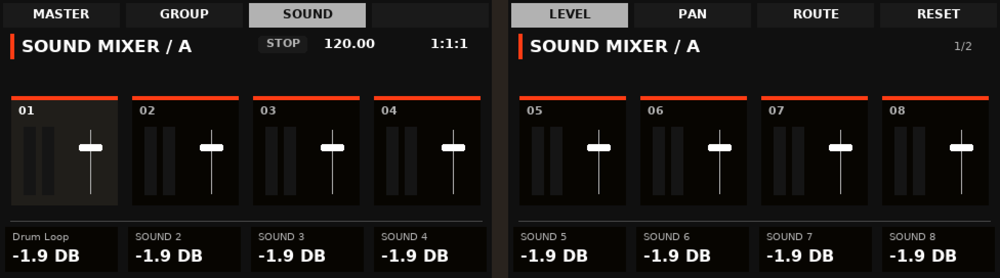
Ducktor: sidechain ducking
Ducktor is a built-in effect. Insert it on a bass Sound, Group or other target and use another signal, such as a kick, to reduce its level rhythmically.
- On the target, open an empty effect slot and load Machinista Ducktor. Set SOURCE to the trigger Sound, Group or EXT STEREO. Invalid feedback routes are excluded.
- Play the trigger and target. Lower THRESHOLD until the GR meter shows reduction. Set ATTACK, RELEASE, MAX DUCK and MIX to taste. The second page contains KNEE, HOLD and DETECT HP.
- Save the project or Sound to preserve the source and controls. Muting the trigger also removes its audio trigger; this implementation has no separate ghost-trigger mode.
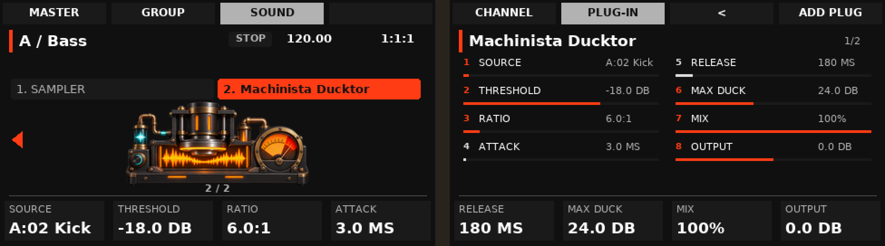
Built-in studio effects
These effects are ready to use without installing extra plug-ins: EQ, Compressor, Limiter, Transient, Reverb, Delay, Chorus, Flanger, Phaser, Tremolo, Vibrato and Auto Pan.
- Choose SOUND, GROUP or MASTER. Open the plug-in chain, choose ADD PLUG and select an effect from EFFECT.
- Play your sound and turn the labelled encoders. Reverb offers ROOM, HALL and PLATE. Delay offers STEREO, PING PONG, TAPE and DUB; SYNC follows the project tempo and DIVISION sets the echo spacing.
- Adjust MIX to blend the effect with the original sound. Save the project to keep the settings. Use the existing automation workflow to record parameter changes.
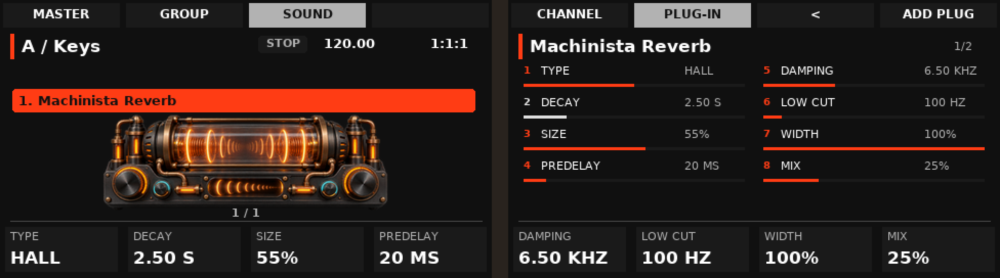
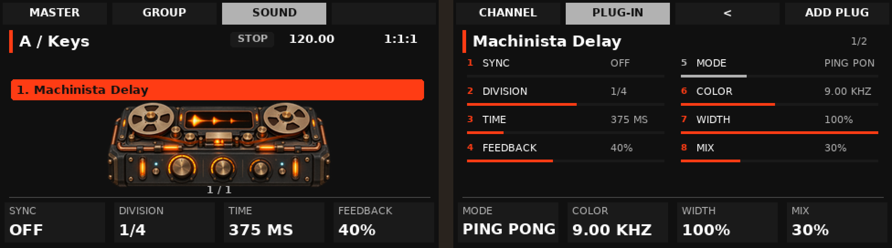
25 · Mute, solo, selection and duplication
MUTE silences a pad or Group. SOLO lets you listen to it on its own. Selecting a pad chooses what you will edit; it does not mute anything. DUPLICATE makes a copy. Check which mode is open before pressing the pads.
- Hold MUTE or SOLO and press a Sound pad to toggle its state. The dedicated A-H keys toggle Group mute or solo in these views.
- Muting silences the running sample immediately rather than waiting for the tail to finish. If an entire Group is silent, inspect Group mute and Scene clip activation as well as Sound mute.
- Use SELECT for quiet focus and multi-selection. The displayed ALL action toggles between all sixteen Sounds and the selected Sound; in the event grid it toggles event selection.
- Use DUPLICATE with the appropriate source and destination selection. Check whether you are duplicating a Sound, a Pattern or a Scene before confirming the operation.
Global stop for voices. SHIFT + MUTE chokes all active sample voices, plug-in/MIDI notes, previews and held repeat/arp notes from any screen. It does not switch your edit workspace.
Clear is not Sound reset. SHIFT + CLEAR removes targeted Pattern notes. To empty a Sound slot, hold SHIFT + ERASE and press its pad. This clears its sample/plug-in assignment; it is a different operation from muting it.
Held-mode actions. When a matching mode is held, display button 1 reads PIN. In SCENE, MUTE/SOLO, DUPLICATE and GRID, the displaced first action is on display button 4. Once you leave that mode, the first action belongs to the new screen.
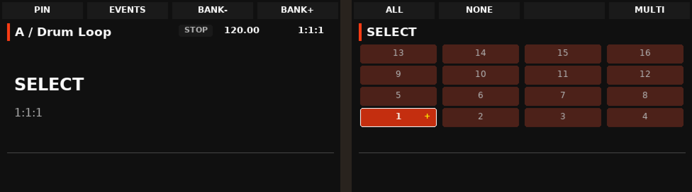
26 · Scenes and Song arrangement
Build sections such as an intro, verse and chorus as Scenes. Each Scene chooses which Pattern each Group plays. Arrange the Scenes in Song. If two Scenes use the same Pattern, editing that Pattern changes both sections.
- Create Patterns in the relevant Groups. Select a Scene, then choose each Group Pattern that belongs in that Scene. Leave a clip empty when the Group should not play.
- Select another Scene and build a variation. During playback the Perform Grid determines when a requested Scene change takes effect.
- Hold VARIATION and use SONG. Release VARIATION after the Song destination is highlighted.
- Select a Scene before opening Song. INSERT (display button 1) inserts that Scene at the selected Song position. Turn the selection encoder to move through entries. PLAY (F2 / button 2) toggles Song playback; DELETE (F3 / button 3) removes an entry after confirmation.
Scene length. An automatic Scene length follows its active Patterns; an explicit Scene length can override it. Patterns can have different lengths and loop within a longer Scene.
Make a variation independent. Duplicating a Scene does not necessarily make its Patterns independent. Use the unique/copy workflow when the variation must have its own editable Patterns.
Master automation. Pattern automation lives with the Group Pattern. Song master automation is handled separately from those per-Pattern lanes.
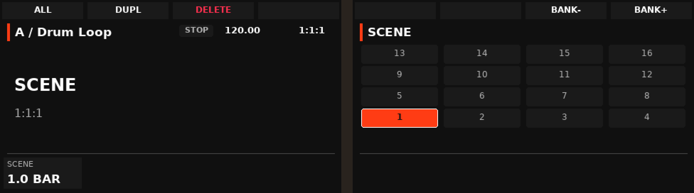
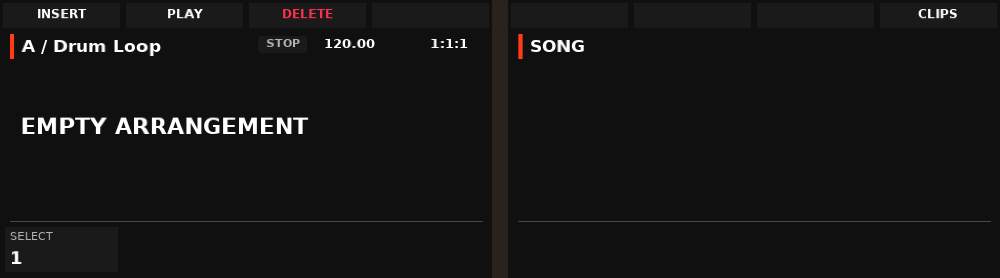
Arrange independent Pattern clips
Each Group has a timeline lane. A clip chooses a Pattern, start, length and source offset. Clips repeat their source Pattern and can be placed independently of Scenes. The Scene song remains available.
- Open SONG and press display button 8 CLIPS. Once selected, ARRANGER returns to this timeline. Push the 4D encoder left/right for time and up/down for Group. The eight encoders edit the labelled fields.
- Choose an empty position, a Group and a Pattern, then ADD. CLIP selects an existing clip; turning past the last one selects NEW. START moves it, LENGTH repeats or trims it, and OFFSET changes its source start. SHIFT gives fine 1/16-note steps.
- COPY duplicates into free space. DELETE asks before removal. Clips in one Group cannot overlap; different Groups can play together. Undo/Redo and project saving include clip edits.
- SHIFT + display button 3 UNIQUE copies the Pattern for this occurrence. SHIFT + display button 2 EDIT opens Events. FROM SONG copies the Scene sequence; SCENES returns to it.
- An empty clip timeline is silent. To play a Pattern again, hold PATTERN and select it with its pad. PLAY starts at the timeline cursor and stops after the final clip. FOLLOW returns the display to playback. SONG audio/MIDI export uses the selected CLIPS or SCENES arrangement. Limits: 512 clips, 1024 bars.
Linked Patterns. Editing a source Pattern changes every linked clip. MAKE UNIQUE copies notes and Pattern modulation into a free Pattern slot, without duplicating samples or plug-ins.
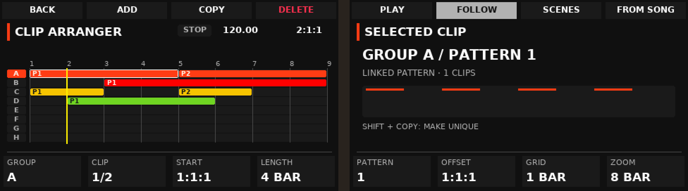
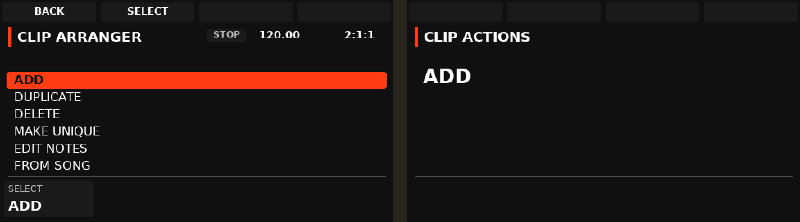
27 · Automation, macros and MIDI Learn
Record changes to a control so they play back with the music: this is automation. A macro brings useful settings together for performance. MIDI Learn connects a knob on an external keyboard or controller to a Machinista setting.
- Play the Pattern, hold AUTO WR. and turn a parameter encoder to write movement. SHIFT + AUTO WR. toggles a locked write state; press AUTO WR. again to leave it.
- Release write mode and listen to the next loop. Parameter playback is transient: the saved base value remains distinct from the automated value.
- Use Macro Assign to select a target parameter, then expose it in the Macro page. Check the Sound/Group/Master scope before assigning.
- For MIDI Learn, touch the target parameter, open MIDI LEARN, press LEARN (display button 2), then send the external CC. BACK cancels; REMOVE deletes the selected mapping. Test with automation writing off.
Clear the intended lane. SHIFT + pad 10 (CLR AUTO) clears automation according to the current target/selection. It does not delete the sample or the Pattern notes. Save before clearing automation you may need again.
Scope and persistence. Sampler, routing, value and compatible plug-in parameters have automation targets. MIDI mappings and plug-in references are stored with the project; moving/removing a plug-in changes the corresponding targets.
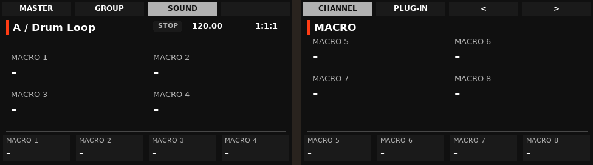
28 · MIDI ports, clock and Bluetooth
Use a keyboard to play Machinista, or let Machinista play an external instrument. MIDI carries notes and control messages, not audio. To hear an external synth through Machinista, connect its audio outputs as well as MIDI.
- Select MIDI INPUT for incoming notes and controllers, then MIDI OUTPUT for the external destination. Set the Sound output channel for the receiving instrument.
- Set CLOCK to OFF, IN or OUT. IN follows an external clock; OUT sends clock. Use CLOCK OFFSET to compensate the receiving setup after testing against a metronome.
- Open BLUETOOTH MIDI and enable ON/OFF. Use the labelled PAIR, SCAN, CONNECT and DISCONN display buttons for the selected device.
- For an iPad, use a Bluetooth-MIDI-capable app to connect. For a keyboard, put the keyboard in its Bluetooth-MIDI pairing mode, then scan/connect from Machinista.
Bluetooth MIDI is not Bluetooth audio. This connection carries note/control/clock messages where supported. It is not an audio link to the iPad and does not make the Pi USB-C power connector a universal audio/MIDI peripheral port.
Availability. A device can be visible in the port list without a complete end-to-end cable/app test. If no notes arrive, check selected port, channel, pairing and the receiving app rather than only the device name.
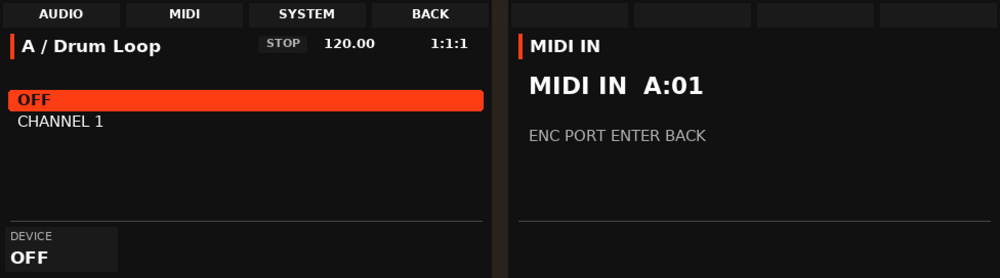
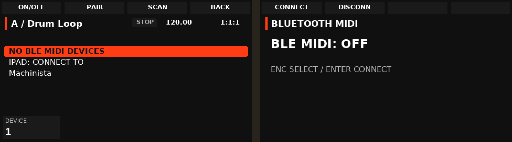
29 · Project names, presets and portable saves
Save the project to keep your work. A project stores your song setup; a Sound preset lets you reuse one instrument or pad sound in another project. Collect the referenced samples before moving a project to another card or Pi.
- Open PROJECT from System settings or the shifted Scene actions. Choose MANAGE, then NEW PROJECT. The new name starts empty.
- Turn the name encoder to choose a character and use navigation arrows to move the cursor. RANDOM suggests a name. SHIFT changes CANCEL to CLEAR; OK commits a valid name.
- Use RENAME to change a display name or SAVE AS to create an independent saved slot. DELETE asks for confirmation. Deleting a saved slot leaves the current working copy available as UNTITLED.
- Use SAVE SOUND/SAVE GROUP for reusable presets. Use COLLECT SAMPLES to copy referenced sample assets into a portable project location before moving it.
Backup is more than one project JSON. Keep the project together with its collected audio and any plug-in state. Preserve the original project before replacing samples or changing a chain.
Save shortcut. SHIFT + FILE saves the current project. The ALL selection action is selection, not save.
RAM and storage. Samples are loaded into RAM for playback; this is not a disk-streaming sampler. SAMPLE RAM can inspect usage and free unused sample memory while stopped.
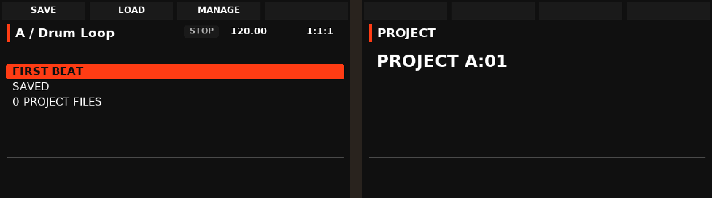
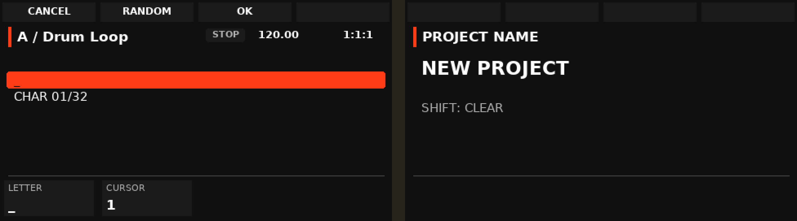
WebUI: project backup and transfer
Open Projects. This list contains saved copies, not every unsaved edit in the running project.
- Save the project on the controller first and choose Refresh projects. Project ZIP downloads the saved project with its collected assets. JSON only downloads the project description and is not a portable sample backup.
- Upload project accepts a project ZIP up to 1 GiB or JSON up to 8 MiB. Wait for its completion message. Uploading imports a saved project; it does not immediately replace the running performance.
- Load the imported project through PROJECT on the controller. Check missing-file/relink warnings. JSON without its referenced audio needs the original paths or relinking.
- Delete asks you to confirm the project name. Stop playback and recording first. Deleting the loaded project opens an empty project and removes its saved slot. A recovery copy is retained; shared samples and plug-in assets stay available.
- Plugins and licensed ROM data are separate from a project archive. Install the same compatible LV2 plugins on the receiving Pi before loading their Sounds. Keep a tested backup before swapping cards.

30 · Relink missing files and export
If a project cannot find a sample, Relink helps you locate the file again. Export creates an audio or MIDI file for use elsewhere, such as a finished mix for sharing or separate parts for your music software.
- If a project reports missing samples, open MANAGE > RELINK SAMPLES. Review the missing entry and search results, or browse to the exact replacement. Do not choose a similarly named but unrelated sample.
- For audio export choose MANAGE > EXPORT AUDIO. Set RANGE to PATTERN, SCENE or SONG and SOURCE to MIX, SOUND, GROUP or a stem set.
- Set sample rate, format/depth, tail length, normalization, loop optimization and destination. Confirm enough free space on SD/USB, then start the render.
- For notes choose EXPORT MIDI. After export, inspect the completion screen for the destination and file. Test the file in the receiving application.
Range matters. PATTERN export uses the selected Group Pattern. SCENE includes its active clips; SONG follows the Song list. A Song export requires a nonempty arrangement.
Tails and loops. A tail preserves effect decay after the musical end. Loop optimization and long tails serve different goals. Choose settings according to whether the result is a repeating loop or a finished track.
Export boundaries. The offline renderer uses the project engine and compatible plug-ins. External hardware audio is not recreated by exporting MIDI notes or an internal audio mix.
MP3 export. In EXPORT AUDIO choose FORMAT MP3. DEPTH becomes BITRATE: 128, 192, 256 or 320 KBPS (default). WAV/AIFF keep their previous bit depth. MP3 is lossy and may have playback padding; choose WAV/AIFF for precise sample loops. Select SD CARD or USB as destination before EXPORT.
Export progress. RENDER shows the file number and a percentage. Wait for EXPORT DONE before removing the destination drive. Cancel stops the render.
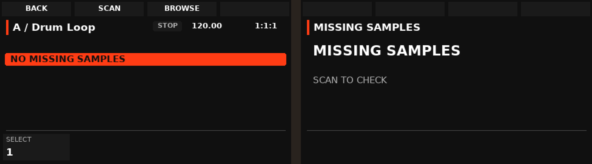
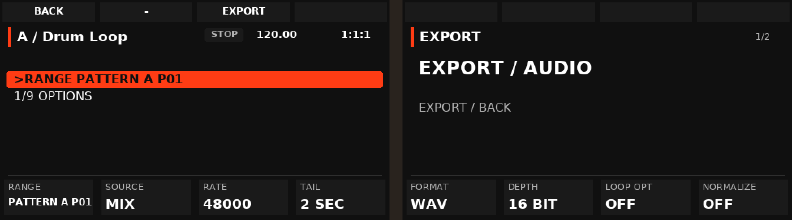
31 · Audio and controller settings
Set the audio output, pad response and display to suit your setup. An audio interface is the device your headphones, speakers or recording input connect to. SETTINGS opens AUDIO, MIDI and SYSTEM. Select a row with encoder 1 and press 4D PUSH. Device choice, Main/Cue and Cue Level use encoder 1.
| Folder / item | Use |
|---|---|
| AUDIO / INTERFACE | AUTO chooses an available supported audio device. You can also choose one yourself. |
| SAMPLE RATE / BUFFER | Sound format and audio buffer. Keep the prepared values for your first test. |
| MAIN / CUE | Choose separate main and headphone-preview outputs, if your device supports them. |
| PLUGIN DELAY | Optional timing correction for delayed effects. Off by default; change only with playback stopped. |
| HEADPHONE / SPEAKER / INPUT | Headphone, speaker and input levels on supported audio boards (HATs). |
| SYSTEM / display | Brightness and contrast for the controller you are using. |
| SYSTEM / pads | Pad sensitivity and how playing strength changes the volume. |
| SYSTEM INFO | Version, processing load, memory and storage space. |
Smaller audio buffers. AUDIO > BUFFER offers AUTO, 128, 256, 512, 1024, 2048 and 4096 frames. Try 256 first. If playback crackles, choose a larger value. ACTIVE shows the size actually accepted by the interface. Internal processing still uses 256-frame blocks; queue duration is not the total playing latency.
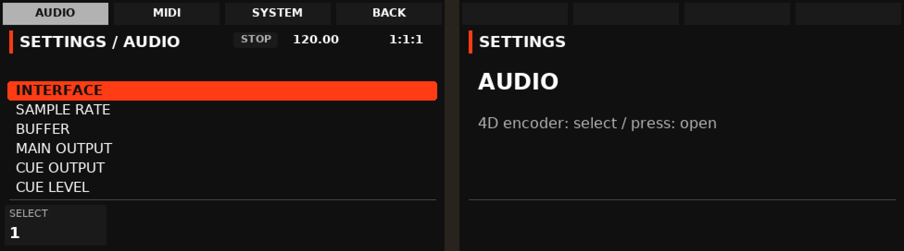
WebUI: system information, SSH and power
The right-hand sidebar is available beside all WebUI tabs. It shows total CPU and a separate bar/percentage for each core, RAM, storage, temperature and uptime. Total CPU is averaged across cores; one busy core can limit audio while the total is low. Values are refreshed periodically.
- Enable SSH starts remote access using the existing Linux account and password/key. The displayed login identifies the user. Turning the switch off stops SSH. The setting persists across restarts; SSH starts off in a fresh image.
- Restart and Shut down open a confirmation. Save & restart or Save & shut down saves the current project/plugin state and stops playback. Cancel returns without the action.
- After shutdown wait until the Pi is fully stopped before removing power, the boot SD or a HAT. After restart reopen the WebUI. Updates are available to everyone under System > UPDATE and in WebUI > Updates. Choose Beta or Release and check manually; installation requires a configured signed feed and stopped PLAY/REC.


Audio settings without guesswork
Get sound working with the prepared settings first. You can return to these choices later. Only controls supported by your audio device can appear in its hardware mixer.
- INTERFACE: the audio device being used. MAIN OUTPUT: the output pair sent to your speakers or headphones. CUE: a separate listening output, if available.
- Input gain: makes a microphone or other recording input louder before recording. Output and headphone levels change listening volume. These are different controls.
- Meters and dB: 0 dB on a digital recording/output meter is the ceiling. Leave room below it for loud hits; reaching the ceiling can cause clipping, a harsh distortion. An input peak around -12 dB is a useful starting point.
- BUFFER: a smaller buffer can make playing feel more immediate but gives the Pi less time to finish the audio. If you hear clicks under load, use fewer demanding sounds or try a larger buffer.
- SAMPLE RATE: how often audio is measured each second. Higher is not automatically better for a project and uses more processing. Keep the prepared value until you have a reason to change it.
- CPU: shows processing load, not volume. One busy core can cause dropouts even if the overall figure looks low. Try the same music with fewer instruments/effects to check whether load is the cause.
Display, pads and hardware levels
Display and pad settings apply to the controller you are using. Hardware mixer settings affect your audio device. Keep playing a pad while adjusting its listening level so you can hear the change.
Adjust only the connected surface. Display and pad preferences apply to this controller. SYSTEM > DISPLAY > COLOR SCHEME selects Plus, Classic, Furnace, Polar, Voltage, Amber or Daylight. Turn encoder 1 or the 4D encoder; changes are saved automatically for this controller. Plus is the default for new installations and RESET. Classic is the previous Current profile. Saved choices survive updates. Group order is A orange, B red, C yellow, D green, E turquoise, F blue, G violet and H pink. Pad grids and sample waveforms follow the selected group color; the selected pad is darker with a light outline and the waveform playhead is white. Mixer meters follow group colors; mute/solo and peak warnings remain visible. System Info shows CPU/RAM, per-core CPU bars and storage.
CPU figures. CPU is averaged across cores. A single busy core can cause audio overruns.
Hardware mixer and reset. Use the physical interface knobs for gain and output level. Pads remain playable in Settings. RESET affects only this controller.
MK3 audio and MIDI. Choose the MK3 in AUDIO > INTERFACE. Main output uses channels 1/2; headphones use 3/4. Assign Cue and Sound/Group routes to the desired pair. Select Maschine MK3 MIDI 1 for DIN MIDI input/output. Hardware knobs set physical gain and output levels.
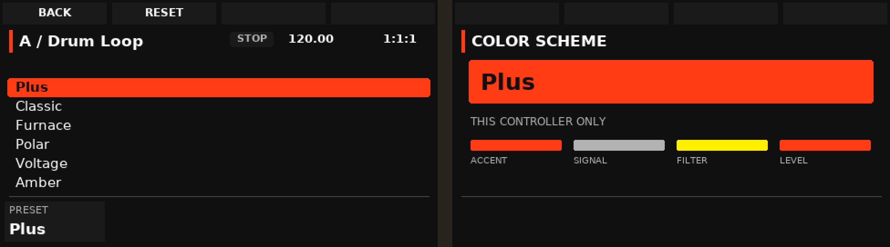
32 · WebUI, Wi-Fi and sample transfer
The WebUI is Machinista's control page in a browser. Open it on a phone, tablet or computer to upload samples, manage projects and organize Sounds. No extra app is needed; connect to the same network as the Pi.
- When no saved router is connected, join Machinista-XXXX. XXXX is the last four hexadecimal characters of the permanent Wi-Fi MAC address. The hotspot password is machinista.
- Open http://10.42.0.1:8080. Upload your WAV files into Library/Kicks, Library/Snares, Library/Hi-Hats, Library/Loops or your own folder. Browse those folders from the controller.
- Under WLAN, scan/select your router and enter its password. The Pi switches networks. Rejoin that home network and open http://machinista.local:8080, or its assigned IP address.
- If the router connection fails or disappears, the hotspot returns. A router does not need Internet access for local use. The single internal Wi-Fi radio changes between router and hotspot operation.
- For SMB use smb://machinista.local/Samples; on Windows use \\machinista.local\Samples. Username and password are both machinista. The share exposes the SD sample library.
Preview and access. WebUI prehear plays on your browser device, not on the Pi audio outputs. This beta intentionally has no WebUI login; anyone on the connected network can access its exposed file functions.
Transfer limits. WAV uploads are limited to 1 GiB per file with a free-space reserve. Uploads do not silently overwrite an existing local file. Attached USB sources are available through the WebUI.
Boot image accounts. The distributable image uses the machinista account and excludes the source device's personal projects and Wi-Fi credentials. SSH is disabled in that image.
WebUI: connect Wi-Fi and use the hotspot
Use a computer, tablet or phone on the same network. The English WebUI controls are the same for every supported controller.
- With no saved router connection, join Machinista-XXXX using password machinista. XXXX is derived from the last four Wi-Fi MAC characters. Open http://10.42.0.1:8080.
- In the Wi-Fi sidebar choose Scan for Wi-Fi, select Wi-Fi network, enter Password and Connect. The Pi changes networks, so this page can disconnect.
- Reconnect your browser device to that router and open http://machinista.local:8080 or the assigned IP with :8080. If connection fails or the saved router is absent, reconnect to the hotspot and use 10.42.0.1:8080 again.
- SMB offers the same SD sample library at smb://machinista.local/Samples, account/password machinista. Keep the boot SD inserted while powered. Browser preview is local to the browser device.

33 · Shortcuts and edit safety
Shortcuts speed up familiar tasks. A + means hold the first button while pressing the second. Before using CLEAR, COPY or PASTE, check the selected pad and notes so you change the intended part of your music.
| Gesture | Result |
|---|---|
| SHIFT + pad 1 / 2 | Undo / Redo. |
| SHIFT + pad 3 / 4 | Step Undo / Step Redo (hardware labels COMPARE / SPLIT). |
| SHIFT + pad 5 / 6 | Quantize 100% / 50%. |
| SHIFT + pad 7 / 8 | Nudge selected/relevant events left / right. |
| SHIFT + pad 9 | Clear only the selected Sound/pad events in this Pattern; keep its sample. |
| SHIFT + pad 10 | Clear automation in the current target. |
| SHIFT + pad 11 / 12 | Events: 11 copies explicitly selected notes; move the cursor, then 12 pastes there with original spacing. Without a note selection, copy all current pad events and paste at original Pattern positions. |
| SHIFT + pad 13 / 14 | Transpose events -1 / +1 semitone. |
| SHIFT + pad 15 / 16 | Transpose events -12 / +12 semitones. |
| SHIFT + ERASE + Sound pad | Reset the Sound slot, including its assignment. |
| SHIFT + MUTE | Choke all notes/voices/previews globally. |
Before a destructive action. Check scope, Group, Sound, Pattern and selection. An inverted confirmation is a decision, not a status message. Read the prompt and use the labelled confirm/cancel action.
Sampling shortcuts. SHIFT + SAMPLING opens Sample Edit; SHIFT + PAD MODE enables Keyboard; SHIFT + SELECT opens Events. Keep these separate from mode pinning.
Back to top34 · Troubleshooting and a session checklist
If something does not sound right, check one thing at a time. Start with the selected Sound, MUTE/SOLO and the audio output. Save a copy of your project before trying changes that remove notes or replace sounds.
| Symptom | Check in this order |
|---|---|
| No Sound | Interface and Main Output; Group/Scene clip; Sound/Group mute or solo; sample mapping; level. |
| Notes do not record | REC enabled; active Group Pattern; Pattern length; correct keyboard note; next loop. |
| A long delay after a pad | Bypass chain effects, especially look-ahead/tape processing; then check buffer and CPU. |
| Distorted recording | Input clipping; selected rate versus interface-supported rate; SR/BITS effects in the Sound. |
| Only one slice sounds | Mapped note zones and played note; correct target Sound; zone key/velocity limits. |
| Editor does not follow | FOLLOW enabled; current Pattern is active; transport playing; cursor edits have paused Follow. |
| Group is silent | Group mute, another Group solo, Scene clip empty, output route and selected Pattern. |
| USB file is missing | Media mounted; correct folder; WAV extension; relink unavailable external assets. |
Before ending a session. Stop recording, save the project, collect samples if you will move it and back up the project/audio folder. Use an orderly system shutdown before removing power or changing the HAT.
When reporting a problem. Record the controller, workspace name, Group/Pattern, audio interface, sample rate/buffer and exact gesture. A display photo and a minimal saved project make a reproducible report.
Continue with the atlas. The following pages are a visual reference, not another tutorial. Captions identify the workspace and visible parameter bindings so you can match a screen to the workflow above.
Back to top35 · Live FX performance and recording
Play effects with the pads while your beat runs. PUNCH applies an effect only while you hold the pad. FLEX keeps it active after release. KNOB lets you turn the chosen effect on or off and adjust its depth. With REC on, your performance can be recorded.
- Hold VARIATION and use display button 7 LIVE FX. In waveform navigation use button 3. SHIFT + SOLO is an additional shortcut.
- Pads 1-15 select effects; pad 16 is DRY/OFF. PUNCH is momentary, FLEX retains the effect after release and KNOB toggles a selected effect. Read the effect name before playing.
- Display buttons 1-3 choose PUNCH/FLEX/KNOB. Encoder 1 changes DEPTH; buttons 5/6 decrease/increase it. Button 7 is OFF.
- Enable PLAY and REC to capture FX gestures into Pattern automation. With REC off, playing effects does not write notes or automation.
Leave effects safely. BACK, SHIFT + SOLO or normal workspace navigation turns off the manually held/latched effect. New/Load also clears manual FX. Saved automation can activate its recorded effect during playback.
Playback first. Complex plugin chains and high voice counts still consume CPU. A built-in effect does not make an overloaded instrument chain safe.
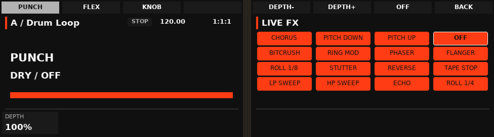
36 · Scene tools, banks and quantize
Use Scene Options when you want to change a whole song section. UNIQUE PATTERNS gives a Scene its own Pattern copies, so you can change the chorus without changing the verse. Quantize moves notes towards an even timing grid.
- Hold SCENE, then SHIFT + display button 4 OPTIONS. Encoder 1 selects the operation; display button 2 SELECT opens it.
- AUTO LENGTH removes a manual Scene-length override. UNIQUE PATTERNS copies referenced Patterns so that edits no longer change another Scene using the original Patterns. DELETE SCENE removes the Scene and its Song references after confirmation.
- SCENE or PATTERN + SHIFT + PAGE LEFT/RIGHT changes banks. SCENE also offers BANK-/BANK+ on buttons 7/8.
- Hold SHIFT + FOLLOW, choose QUANT with button 4, set target/strength and use button 8 APPLY.
Check the target. Use a disposable project copy when learning Delete, Clear or Unique. The destination and confirmation question matter.
37 · Custom chords and playing variations
Put a whole chord on one pad. CUSTOM lets you choose or make your own chord assignments. All chord pads play the selected instrument Sound. Strum spreads the notes in time; inversions move notes up or down an octave to change the chord voicing.
- Open PAD MODE, enable KEYBOARD and choose CUSTOM chord mode. Use the chord configuration pages to select a preset or edit the pad assignments.
- Import supported MPC .progression or Ripchord chord presets in the WebUI. Chord maps are note assignments, not MPC sample-based Keygroup instruments.
- LEARN captures incoming pitches in the selected assigned chord. Save the project to keep these changes. Use the WebUI Chords editor to create or edit a reusable library preset; the detailed PAD MODE chapter explains the controls.
- Adjust strum/delayed attacks and playing variations in the chord configuration. Test with REC off, then record the resulting performance into a Pattern.
Pad feedback. Assigned chord pads are dim. A played pad flashes bright; the last played pad stays highlighted so you retain your editing focus.
Sound mapping. Sampler Zones need correct Root, Key Low/High and Velocity ranges. An imported chord map supplies no instrument sound or samples.
Back to top38 · Sounds, Zones and Autosampler
Save an instrument so you can load and play it again from Sounds. A multisample Sound uses several recordings across the keyboard. A live plug-in Sound keeps the instrument and its settings. Autosampler plays and records a range of notes for you, then maps the recordings to keys.
- In the WebUI Sounds area, add samples, review Root and Key Low/High as note names, then set velocity ranges. Note names in filenames can suggest Root; review every inferred value before saving.
- Name the Sound and choose a folder/tags. Sounds appear in their own Browser category. Controller Zone editing remains available.
- For Autosampler, stop playback/recording. Choose External MIDI or the currently loaded LV2 instrument. External hardware needs both MIDI OUT and audio IN connections.
- In SAMPLING use the page arrows to reach AUTO. Encoders configure note range, interval, velocity layers, note length, tail and gap. NAME/FOLDER use the name editor; START/CANCEL are labelled actions.
- Choose the name, note range and source carefully, then START. When complete, the recorded Zones are mapped automatically and saved as a Sound.
No factory assets. This image contains no Sound presets, samples or LV2 bundles. Add your own files and install compatible plugins separately.
Live LV2 patch. Save current Sound / LV2 patch stores settings/state and the strip, not a rendered sample. The same compatible plugin must be installed to load it later.
WebUI: save a live LV2 patch as a Sound
A live patch retains the instrument and plugin strip. This differs from Autosampler, which records WAV Zones.
- Load the LV2 instrument on the destination Sound and set its patch and effects on the controller. Select that Sound before opening the WebUI Sounds tab; verify Group, Pad and name in the context line.
- Choose Save current Sound / LV2 patch. Enter a name, optional Folder and Tags, then Save patch and strip. Wait for the saved confirmation. No audio sampling occurs.
- The resulting Sound appears in the Sounds library and controller Browser. Search by name/tag or filter by folder. Indented folders include their children and show Sound counts. New folder and New sampler Sound use the selected folder. Load on selected pad replaces the destination after confirmation; verify that target first.
- Keep the same compatible LV2 plugin installed. Saving a patch does not supply the plugin binary or its factory/ROM data. For a sample-only instrument independent of the source synth, use Autosampler instead.

WebUI: configure and run Autosampler
Open Sounds > Autosampler and stop playback and recording. This records one sample per note/velocity combination and maps the result into a new Sound.
- Enter Sound name, Folder and Tags. Choose Current LV2 instrument for the selected controller Sound, or External MIDI instrument. External sampling needs MIDI output/channel and the connected interface audio input.
- Set Lowest/Highest MIDI note and Semitone interval. Velocity layers is a list of actual velocities, for example 32, 64, 96, 127; it is not a layer count. Review the zone/time estimate.
- Note length holds the key; Tail captures its release after note-off; Gap separates takes. Trim leading silence removes silence before the attack while retaining a short margin. Check external input gain before starting.
- Start autosampling and follow progress; Cancel recording aborts the job. After completion review silence/clipping warnings and audition the mapped Sound. Edit its Zones if needed. The source LV2 instrument is not the resulting sampled Sound.

SoundFonts as native Sounds
The WebUI imports uncompressed SoundFont 2 (.sf2) presets into native sampler Sounds. No external playback plugin is required. SF3 is not supported.
- Open Sounds in the WebUI and choose Import SoundFont. Upload an .sf2 file, then inspect its preset list. Choose the bank and preset you want to convert.
- Review compatibility notes before import. Name the Sound, choose its folder and tags, then import. Native zones preserve supported samples, key/velocity ranges and playback mapping.
- Load the result from Sounds on the controller and play it in Keyboard mode. Compare envelopes and balance: custom SF2 modulators and some filter/effect behavior are not reproduced.
39 · WebUI files, plugins and power
Use the browser page to organize files, add plug-ins and shut down the Pi. At home, open http://machinista.local:8080 on the same network. Without a router, connect to the Machinista-XXXX Wi-Fi hotspot (password machinista) and open http://10.42.0.1:8080.
- In Sample Library, open a destination folder and upload WAV/MP3. Create folders, move files/folders and use recoverable deletion to organize your library.
- Use the Projects area to download/upload project packages. Collect referenced samples for a portable backup, and keep required plugin installers separately.
- In LV2, upload a compiled ARM64 Linux bundle as ZIP/TAR. The device checks architecture, dependencies and metadata. Compatible uploads activate when playback and recording are stopped.
- The installed-plugin list shows available bundles and removal actions. Removing a plugin does not replace it in saved Sounds/projects; reinstall it before those can play correctly.
- System provides SSH enable/disable, restart and shutdown. Select a home Wi-Fi router and enter its password in Network; loss of the saved connection returns to the hotspot.
Power and updates. Shut down before unplugging the Pi or a HAT. This public beta contains no automatic updater; updates use a newly supplied image.
Own JV ROMs. The optional JV emulator is supplied separately, without ROMs. Install its LV2 archive, then configure your own ROMs/expansion files in the optional JV WebUI section. No sounds are supplied by the core image.
40 · Machinista Synth
Play the built-in synth straight away: no extra plug-in is needed. Choose a BANK, then a PATCH (a ready-made sound). Start with a patch you like and change one setting at a time. Four oscillators are four sound sources you can mix together; a filter and envelopes shape the result.
- Select the destination Sound. Open the plug-in browser, choose INSTRUMENT, select Machinista Synth and use the displayed LOAD action.
- On the first page of settings choose BANK = a category such as Synth Keys and a named PATCH, or begin with Init. Changes belong to this Sound; another pad is not a separate oscillator.
- Use SHIFT + PAD MODE to enable Keyboard. Play notes or chords while adjusting the synth. In Events, keyboard pads keep playing this Sound instead of selecting other Sound slots. REC is required to record notes.
- Use the page arrows and eight parameter encoders. Waveform and modulation graphics appear above the parameter strip.
- Save a named Sound through the existing controller Sound-save workflow or WebUI Save current Sound / LV2 patch. The native synth patch and its effect strip stay together.
Processing load. More voices, oscillators, unison and effects require more CPU. Start with the factory settings on Pi 4. A high VOICES setting is not a guarantee that every maximum combination fits the audio deadline.
Original instrument. This is an original synth. FM/feedback FM and proprietary third-party oscillator/filter algorithms are not included.
Oscillators, envelopes and modulation
Choose one of the eight controller pages, then play the current Sound while editing. Controls that do not apply to the selected wave show N/A.
- OSC 1–4: choose WAVE, SEMI, FINE in cents, LEVEL and PAN. POSITION scans a wavetable; PULSE WIDTH changes a pulse. The controller has eight curated pages: Presets/Voicing, OSC 1-4, Filter, Envelopes and Modulation. Character, response and detailed Ring settings are in WebUI > Synth.
- Two filters work in Series or Parallel. Four DAHDSR envelopes and four LFOs provide movement. Choose a matrix SOURCE and TARGET with nonzero AMOUNT; VIA, MOD SHAPERS and MIN/MAX shape the route. LFO 1 example on controller page 8: WAVE Sine, RATE 2 Hz, SYNC Off, LEVEL 100%, SOURCE LFO 1, TARGET FILTER1 CUTOFF, AMOUNT 20%, VIA Off. Enable a low-pass filter near 1 kHz and hold a note. LFO shape/rate alone do not change the sound without a matrix route. This is a control-rate matrix, not an FM engine.
Graphical Synth editor in WebUI
Open the Synth tab for the complete instrument. It follows the selected Sound and keeps the controller workflow compact.
- Some factory patches include native Chorus, Delay or Reverb. These load automatically as editable entries after the Synth. Changing patches replaces only patch-owned effects; your extra inserts remain. Save current Sound keeps the full edited chain.
- Load Machinista Synth on a Sound and select its pad. Choose the instrument slot if there is more than one synth. Bank and Patch load a starting preset; Save Sound keeps your edited patch and effect strip.
- Use Oscillators, Filters, Envelopes, LFOs, Matrix and Voicing. Drag knobs vertically or move their sliders. Type an exact value below a knob. Percent fields use 0-100 and FINE uses cents. Open the folded Character, Response, Ring and Loop sections for details.
- The graphs update while you edit; pads and a connected keyboard audition the same Sound. Live parameter edits also work during playback. Use the controller to record parameter automation. Stop playback before saving the Sound.
- Matrix selects one of 32 routes. Choose Source, Target and Amount, then optional Via and Shaper. No synthesis parameters are removed by the compact controller layout.

Import your own synth waves
The WebUI has a separate Synth Waves tab. It manages waveform sources, not finished Sound patches.
- Open Synth Waves. Keep Single cycle for a WAV containing exactly one cycle. For wavetables select the samples per cycle, enter an optional folder and tags, then import. Stereo conversion must be enabled explicitly.
- Supported: PCM16/24/32 and float32 WAV, 32–16384 samples per cycle, up to 256 cycles and 32 MiB per upload. Common 600-sample single cycles work too. The import worker prepares filtered playback tables.
- Choose the imported name in an OSC WAVE field. Save the Sound or project to collect its user waves. Removing a library entry leaves saved Sounds/projects playable; retained assets still use storage.

Screen reference
STARTUP
INPUT
SOURCE: NONE · GAIN: 0.0 DB
GROOVE
amount: 0 % · cycle: 1/4 · invert: OFF
MACRO
MACRO 1: - · MACRO 2: - · MACRO 3: - · MACRO 4: - · MACRO 5: - · MACRO 6: - · MACRO 7: - · MACRO 8: -
MACRO ASSIGN
TARGET: 1
SAMPLER
POLYPHONY: 8 · PITCHBEND: 2
PLUGIN
PLUGIN SLOTS
BROWSE
SELECT: 2
PLUGIN BROWSE
SELECT: 2
PLUGIN MOVE
TARGET SLOT: 1
PLUGIN SC
PLUGIN SC: NONE
AUTOSAMPLER
SOURCE: LV2 · LOW NOTE: C3 · HIGH NOTE: C6 · INTERVAL: 12 · LAYERS: 1 · HOLD: 2.00 S · TAIL: 1.00 S · GAP: 0.20 S
SAMPLING
source: EXT STEREO · input: IN 1 · mode: DETECT · threshold: -24
SAMPLE EDIT
START: 0 · END: 44100 · ZOOM: 1X · SCROLL: 0
CHOP
MODE: SPLIT · SLICES: 4 · ZOOM: 1X · SCROLL: 0
ZONE
start: 0 · end: 44100 · ZOOM: 1X · SCROLL: 0
STRETCH
LENGTH: 100% · PITCH: 0
SLICE TARGET
PATTERN: CREATE · MONO: ON · GROUP: A · TARGET: GROUP
SAMPLE DELETE
STEM SEPARATION
AUDIO LOOP
MODE: SAMPLER · BARS: 1 · STRETCH: ON · TUNE: 0
BOUNCE TO PAD
SOURCE G: A · SOURCE PAD: 1 · INPUT: SOUND · TARGET G: A · TARGET PAD: 2 · BARS: 1 · RESULT: AUDIO · MUTE SRC: OFF
LIVE FX
DEPTH: 100%
PAD CONFIG
choke group: 0 · choke mode: MASTER · link group: 0 · link mode: MASTER
NOTE REPEAT
rate: 1/8 · division: NORMAL · gate: 100 · dynamic: 100 · type: UP · octaves: 1 · sequence: 0 · hold: OFF
ARP
rate: 1/8 · division: NORMAL · gate: 100 · dynamic: 100 · type: UP · octaves: 1 · sequence: 0 · hold: OFF
GROUP
SELECT
DUPLICATE
MUTE
SOLO
STEP
LENGTH: 1 BAR · GRID: 1/16 · BASE KEY: 36 · VELOCITY: 100
PATTERN
LENGTH: 1 BAR · GRID: 1/16
PATTERN GRID
EVENT: 1 · SOUND: 1 · PROBABILITY: 100% · POSITION: 1.1.1 · LENGTH: 1/16 · PITCH: C1 · VELOCITY: 100
GRID EDIT
EVENT: 1 · SOUND: 1 · PROBABILITY: 100% · POSITION: 1.1.1 · LENGTH: 1/16 · PITCH: C1 · VELOCITY: 100
EVENT
OPTIONS
grid: 1/16 · grid on: ON · nudge: 1/16 · REC QUANT: ON
RECORD SETTINGS
metro level: 35 · count bars: 1 · record quantize: ON
RECORD PREPARE
GRID: 1/16 · LENGTH: 1 BAR
MIDI TRACK
VIEW NAV
SCENE
SCENE: 1.0 BAR
SCENE OPTIONS
SELECT: 1
SONG
SELECT: 1
SONG AUTO
SELECT: 1
CLIP ARRANGER
GROUP: A · CLIP: NEW/0 · START: 1:1:1 · LENGTH: — · PATTERN: 1 · OFFSET: 1:1:1 · GRID: 1 BAR · ZOOM: 4 BAR
CLIP MENU
SELECT: ADD
MIXER
Drum Loop: -1.9 DB · SOUND 2: -1.9 DB · SOUND 3: -1.9 DB · SOUND 4: -1.9 DB · SOUND 5: -1.9 DB · SOUND 6: -1.9 DB · SOUND 7: -1.9 DB · SOUND 8: -1.9 DB
PROJECT
PROJECT LOAD
SELECT: 1
PROJECT MANAGE
SELECT: 1
PROJECT NAME
LETTER: _ · CURSOR: 1
PRESET LOAD
SELECT: 1
MISSING SAMPLES
SELECT: 1
RELINK RESULTS
SELECT: 1
RELINK BROWSE
SAMPLE RAM
EXPORT
RANGE: PATTERN A P01 · SOURCE: MIX · RATE: 48000 · TAIL: 2 SEC · FORMAT: WAV · DEPTH: 16 BIT · LOOP OPT: OFF · NORMALIZE: OFF
EXPORT DONE
CONFIRM
SETTINGS
SELECT: 1
AUDIO
DEVICE: AUTO
AUDIO RATE
AUDIO RATE: 48000 HZ
AUDIO BUFFER
AUDIO BUFFER: AUTO
MAIN OUTPUT
MAIN OUTPUT: OUT 1/2
CUE OUTPUT
CUE OUTPUT: OFF
CUE LEVEL
CUE LEVEL: 100%
PLUGIN DELAY
PLUGIN DELAY: OFF
INTERFACE MIXER
MIDI IN
DEVICE: OFF
MIDI OUT
DEVICE: OFF
MIDI CHANNEL
MIDI CHANNEL: 1
MIDI SYNC
VALUE: OFF
MIDI OFFSET
OFFSET: 0 MS
MIDI LEARN
SELECT: 1
TEMPO
TEMPO: 120.00
BLUETOOTH MIDI
DEVICE: 1
SYSTEM
UPDATE
BRIGHTNESS
BRIGHT.: 100 · PAD SENS: 100 · CNTR. L: 42 · CNTR. R: 42 · PAD CURVE: LINEAR · INVERT: OFF
INVERT
BRIGHT.: 100 · PAD SENS: 100 · CNTR. L: 42 · CNTR. R: 42 · PAD CURVE: LINEAR · INVERT: OFF
PAD SENS
BRIGHT.: 100 · PAD SENS: 100 · CNTR. L: 42 · CNTR. R: 42 · PAD CURVE: LINEAR · INVERT: OFF
PAD CURVE
BRIGHT.: 100 · PAD SENS: 100 · CNTR. L: 42 · CNTR. R: 42 · PAD CURVE: LINEAR · INVERT: OFF
PERFORM GRID
VALUE: SCENE
RETRIGGER
VALUE: OFF
ARRANGE GRID
VALUE: 1 BAR
AUTOSAVE
VALUE: ON
HEADPHONE LEVEL
HEADPHONE LEVEL: 101
SPEAKER LEVEL
SPEAKER LEVEL: 101
INPUT GAIN
INPUT GAIN: 39
REBOOT
SHUTDOWN
CONTRAST L
BRIGHT.: 100 · PAD SENS: 100 · CNTR. L: 42 · CNTR. R: 42 · PAD CURVE: LINEAR · INVERT: OFF
CONTRAST R
BRIGHT.: 100 · PAD SENS: 100 · CNTR. L: 42 · CNTR. R: 42 · PAD CURVE: LINEAR · INVERT: OFF
COLOR SCHEME
PRESET: Plus
CHANNEL
DEST.: PARENT · LEVEL: 0.0 DB · pan: CENTER
CHANNEL
aux1 dest: NONE · aux1 level: -INF DB · aux1 pre: OFF
CHANNEL
aux2 dest: NONE · aux2 level: -INF DB · aux2 pre: OFF
CHANNEL
DEST.: PARENT · LEVEL: 0.0 DB · pan: CENTER
CHANNEL
aux1 dest: NONE · aux1 level: -INF DB · aux1 pre: OFF
CHANNEL
aux2 dest: NONE · aux2 level: -INF DB · aux2 pre: OFF
INPUT
SOURCE: NONE · GAIN: 0.0 DB
CHANNEL
aux1 dest: NONE · aux1 level: -INF DB · aux1 pre: OFF
CHANNEL
aux2 dest: NONE · aux2 level: -INF DB · aux2 pre: OFF
CHANNEL
INTERNAL TO: NONE · EXT MIDI: OFF · note: C1 · channel: 1
SAMPLER
TUNE: 0.00 · REVERSE: OFF · TYPE: ONESHOT
SAMPLER
TUNE: 0.00 · REVERSE: OFF · TYPE: ADSR · ATTACK: 12 MS · DECAY: 300 MS · SUSTAIN: 65 % · RELEASE: 180 MS
SAMPLER
TUNE: 0.00 · REVERSE: OFF · TYPE: AHD · ATTACK: 12 MS · HOLD: 0 MS · DECAY: 300 MS
SAMPLER
COMP: 0 % · DRIVE: 0 % · SR: 100 % · BITS: 16 · FILTER: LP2 · CUTOFF: 2400 HZ · RESONANCE: 0 % · EQ GAIN: 0.00 DB
SAMPLER
EQ WIDTH: 1
SAMPLER
ATTACK: 0 MS · DECAY: 250 MS · PITCH: 0 · CUTOFF: 0 % · PAN: 0
SAMPLER
SHAPE: SINE · SPEED: 1 HZ · SYNC: FREE · PHASE: 0 · PITCH: 0 · CUTOFF: 0 · PAN: 0
SAMPLER
VEL VOLUME: 100 % · VEL CUTOFF: 0 % · VEL START: 0 % · PAN: CENTER · MW PITCH: 0 · MW CUTOFF: 0 % · MW PAN: 0 %
ZONE
loop: OFF · loop start: 0 · ZOOM: 1X · SCROLL: 0
ZONE
loop end: 44100 · xfade: 0 · ZOOM: 1X · SCROLL: 0
ZONE
tune: 0 · gain: 100 · ZOOM: 1X · SCROLL: 0
ZONE
pan: 0 · root: 36 · ZOOM: 1X · SCROLL: 0
ZONE
attack: 0 · decay: 0 · ZOOM: 1X · SCROLL: 0
ZONE
key lo: 0 · key hi: 127 · ZOOM: 1X · SCROLL: 0
ZONE
vel lo: 1 · vel hi: 127 · ZOOM: 1X · SCROLL: 0
CHOP
BPM: AUTO · ADJUST: 120.00 · ZOOM: 1X · SCROLL: 0
CHOP
MONO: ON · ZOOM: 1X · SCROLL: 0
CHOP
START: 0 · END: 11025 · ZOOM: 1X · SCROLL: 0
CHOP
MODE: GRID · SLICES: 1/16 · ZOOM: 1X · SCROLL: 0
CHOP
MODE: DETECT · SENSITIVITY: 50 · ZOOM: 1X · SCROLL: 0
CHOP
MONO: ON · ZERO-X: ON · ZOOM: 1X · SCROLL: 0
CHOP
MODE: MANUAL · AUTO-SNAP: OFF · ZOOM: 1X · SCROLL: 0
SAMPLING
source: INTERNAL · input: MASTER · mode: DETECT · threshold: -24
SAMPLING
source: INTERNAL · input: MASTER · mode: SYNC · bars: 1
SAMPLING
source: EXT MONO · input: IN 1 L · mode: DETECT · threshold: -24
SAMPLING
source: EXT MONO · input: IN 1 L · mode: SYNC · bars: 1
SAMPLING
source: EXT STEREO · input: IN 1 · mode: SYNC · bars: 1
SAMPLING
monitor: OFF
SAMPLING
monitor: OFF
SAMPLING
source: EXT STEREO · input: IN 1 · mode: DETECT · threshold: -24
SAMPLE EDIT
START: 0 · END: 44100 · ZOOM: 1X · SCROLL: 0
SLICE TARGET
PATTERN: CREATE · MONO: ON · GROUP: H · TARGET: GROUP
SLICE TARGET
PATTERN: CREATE · MONO: ON · GROUP: H · TARGET: 1
SLICE TARGET
PATTERN: CREATE · MONO: ON · GROUP: H · TARGET: 16
PAD CONFIG
FIXED VEL: 100 · BASE KEY: C1
PAD CONFIG
root: C3 · scale: CHROMATIC · chord_mode: OFF · TYPE: MAJOR
PLUGIN
Control 1: 50% · Control 2: 50% · Control 3: 50% · Control 4: 50% · Control 5: 50% · Control 6: 50% · Control 7: 50% · Control 8: 50%
PLUGIN
Control 9: 50% · Control 10: 50% · Control 11: 50% · Control 12: 50% · Control 13: 50% · Control 14: 50% · Control 15: 50% · Control 16: 50%
PLUGIN
Control 17: 50% · Control 18: 50% · Control 19: 50% · Control 20: 50% · Control 21: 50% · Control 22: 50% · Control 23: 50% · Control 24: 50%
PLUGIN MOVE
TARGET SLOT: 3
PLUGIN MOVE
TARGET SLOT: 3
PLUGIN MOVE
TARGET SLOT: 3
PLUGIN BROWSE
SELECT: 2
PAD
DEST.: PARENT · LEVEL: -1.9 DB · pan: CENTER
SAMPLER
POLYPHONY: 8 · PITCHBEND: 2
PLUGIN
PATTERN GRID
EVENT: 1 · SOUND: 1 · PROBABILITY: 100% · POSITION: 1.1.1 · LENGTH: 1/16 · PITCH: C1 · VELOCITY: 100
STEP
LENGTH: 1 BAR · GRID: 1/16 · BASE KEY: 36 · VELOCITY: 100
MIXER
Drum Loop: -1.9 DB · SOUND 2: -1.9 DB · SOUND 3: -1.9 DB · SOUND 4: -1.9 DB · SOUND 5: -1.9 DB · SOUND 6: -1.9 DB · SOUND 7: -1.9 DB · SOUND 8: -1.9 DB
MIXER
MASTER: 0.0 DB
MIXER
MASTER: 0
MIXER
MASTER: PARENT
MIXER
GROUP 1: 0.0 DB · GROUP 2: 0.0 DB · GROUP 3: 0.0 DB · GROUP 4: 0.0 DB · GROUP 5: 0.0 DB · GROUP 6: 0.0 DB · GROUP 7: 0.0 DB · GROUP 8: 0.0 DB
MIXER
GROUP 1: 0 · GROUP 2: 0 · GROUP 3: 0 · GROUP 4: 0 · GROUP 5: 0 · GROUP 6: 0 · GROUP 7: 0 · GROUP 8: 0
MIXER
GROUP 1: PARENT · GROUP 2: PARENT · GROUP 3: PARENT · GROUP 4: PARENT · GROUP 5: PARENT · GROUP 6: PARENT · GROUP 7: PARENT · GROUP 8: PARENT
MIXER
Drum Loop: -1.9 DB · SOUND 2: -1.9 DB · SOUND 3: -1.9 DB · SOUND 4: -1.9 DB · SOUND 5: -1.9 DB · SOUND 6: -1.9 DB · SOUND 7: -1.9 DB · SOUND 8: -1.9 DB
MIXER
Drum Loop: 0 · SOUND 2: 0 · SOUND 3: 0 · SOUND 4: 0 · SOUND 5: 0 · SOUND 6: 0 · SOUND 7: 0 · SOUND 8: 0
MIXER
Drum Loop: PARENT · SOUND 2: PARENT · SOUND 3: PARENT · SOUND 4: PARENT · SOUND 5: PARENT · SOUND 6: PARENT · SOUND 7: PARENT · SOUND 8: PARENT
PATTERN GRID
EVENT: 1 · SOUND: 1 · PROBABILITY: 100% · POSITION: 1.1.1 · LENGTH: 1/16 · PITCH: C1 · VELOCITY: 90
PATTERN GRID
EVENT: 1 · SOUND: 1 · PROBABILITY: 100% · POSITION: 1.1.1 · LENGTH: 1/16 · PITCH: C1 · VELOCITY: 90
SYSTEM
SYSTEM
SYSTEM
SETTINGS
SELECT: 4
SETTINGS
SELECT: 8
SETTINGS
SELECT: 1
SETTINGS
SELECT: 4
SETTINGS
SELECT: 8
SETTINGS
SELECT: 1
SETTINGS
SELECT: 4
SETTINGS
SELECT: 8
OPTIONS
strength: 100% · target: GROUP
OPTIONS
swing: 0%
SYSTEM
SYSTEM
SYSTEM
PAD CONFIG
root: C3 · scale: CHROMATIC · chord_mode: CUSTOM · PRESET: Evening Keys · PAD BANK: 1 · STRUM MS: 24 · direction: UP · TIME RAND: 4
PAD CONFIG
edit_voice: 1 · edit_note: C3 · edit_input: C3
PAD CONFIG
VEL SPREAD: 8 · VEL DIR: UP · VEL RAND: 3
CHOP
START: 11025 · END: 22050 · ZOOM: 8X · SCROLL: 8000
SAMPLE EDIT
START: 0 · END: 44100 · ZOOM: 4X · SCROLL: 8000
PATTERN GRID
EVENT: 9 · SOUND: 1 · PROBABILITY: 100% · POSITION: 1.1.1 · LENGTH: 1/16 · PITCH: C1 · VELOCITY: 100
PLUGIN
SOURCE: A:02 Kick · THRESHOLD: -18.0 DB · RATIO: 6.0:1 · ATTACK: 3.0 MS · RELEASE: 180 MS · MAX DUCK: 24.0 DB · MIX: 100% · OUTPUT: 0.0 DB
PLUGIN
WAVE: Table Vowel · SEMI: 0 · FINE: 0 CT · LEVEL: 65% · PAN: 0% · POSITION: 40% · FUZZ: 0% · RING: 0%
PLUGIN
AMP ATTACK: 5.0 MS · AMP DECAY: 250 MS · AMP SUSTAIN: 80% · AMP RELEASE: 200 MS · FLT ATTACK: 10 MS · FLT DECAY: 250 MS · FLT SUSTAIN: 0% · FLT RELEASE: 200 MS
PLUGIN
TYPE: LP12 · CUTOFF: 12.00 KHZ · RESONANCE: 10% · ENV DEPTH: +0.00 OCT · DRIVE: 0% · KEY TRACK: 0% · VEL TO CUT: +0.00 OCT · OUTPUT: 100%
PLUGIN
WAVE: Sine · RATE: 1.00 HZ · SYNC: Off · LEVEL: 100% · SOURCE: Off · TARGET: OFF · AMOUNT: 0% · VIA: Off
PLUGIN
BANK: 1 · PATCH: 1 · OUTPUT: 70% · MONO: OFF · GLIDE: 0.0 MS · UNISON: 1 · DETUNE: +10 CT · SPREAD: 50%
PLUGIN
LOW GAIN: 0.0 DB · LOW FREQ: 100 HZ · MID 1 GAIN: 0.0 DB · MID 1 FREQ: 400 HZ · MID 2 GAIN: 0.0 DB · MID 2 FREQ: 2.50 KHZ · HIGH GAIN: 0.0 DB · HIGH FREQ: 8.00 KHZ
PLUGIN
THRESHOLD: -18.0 DB · RATIO: 4.0:1 · ATTACK: 10 MS · RELEASE: 120 MS · KNEE: 6.0 DB · MAKEUP: 0.0 DB · MIX: 100% · OUTPUT: 0.0 DB
PLUGIN
CEILING: -1.0 DB · INPUT: 0.0 DB · RELEASE: 100 MS
PLUGIN
ATTACK: 0% · SUSTAIN: 0% · SENSITIVITY: 50% · ATTACK TIME: 5.0 MS · SUSTAIN TIME: 120 MS · MIX: 100% · OUTPUT: 0.0 DB
PLUGIN
TYPE: HALL · DECAY: 2.50 S · SIZE: 55% · PREDELAY: 20 MS · DAMPING: 6.50 KHZ · LOW CUT: 100 HZ · WIDTH: 100% · MIX: 25%
PLUGIN
SYNC: OFF · DIVISION: 1/4 · TIME: 375 MS · FEEDBACK: 40% · MODE: PING PONG · COLOR: 9.00 KHZ · WIDTH: 100% · MIX: 30%
PLUGIN
RATE: 0.60 HZ · DEPTH: 60% · DELAY: 16 MS · FEEDBACK: 10% · WIDTH: 100% · COLOR: 12.00 KHZ · MIX: 40% · OUTPUT: 0.0 DB
PLUGIN
RATE: 0.60 HZ · DEPTH: 60% · DELAY: 2.0 MS · FEEDBACK: +45% · STEREO: 90 DEG · MIX: 50% · OUTPUT: 0.0 DB
PLUGIN
RATE: 0.60 HZ · DEPTH: 60% · CENTER: 800 HZ · FEEDBACK: +25% · STAGES: 6 · STEREO: 90 DEG · MIX: 50% · OUTPUT: 0.0 DB
PLUGIN
SYNC: OFF · DIVISION: 1/4 · RATE: 0.60 HZ · DEPTH: 65% · SHAPE: SINE · STEREO: 0 DEG · MIX: 100% · OUTPUT: 0.0 DB
PLUGIN
SYNC: OFF · DIVISION: 1/4 · RATE: 0.60 HZ · DEPTH: 25% · STEREO: 0 DEG · MIX: 100% · OUTPUT: 0.0 DB
PLUGIN
SYNC: OFF · DIVISION: 1/4 · RATE: 0.60 HZ · DEPTH: 60% · SHAPE: SINE · PHASE: 0% · MIX: 100% · OUTPUT: 0.0 DB
CLIP ARRANGER
GROUP: A · CLIP: 1/2 · START: 1:1:1 · LENGTH: 4 BAR · PATTERN: 1 · OFFSET: 1:1:1 · GRID: 1 BAR · ZOOM: 8 BAR
CLIP MENU
SELECT: ADD